<!doctype html>
<html lang="en">
<head>
  <meta charset="utf-8">
  <meta name="viewport" content="width=device-width, initial-scale=1">
  <title>arxiv digest — 2026-10-10</title>
  <style>
:root {
  --bg: #ffffff;
  --fg: #1f2328;
  --muted: #59636e;
  --border: #d0d7de;
  --card: #f6f8fa;
  --link: #0969da;
}
body {
  max-width: 980px;
  margin: 0 auto;
  padding: 2rem 1rem 5rem;
  font-family: -apple-system, BlinkMacSystemFont, "Segoe UI", Helvetica, Arial, sans-serif;
  line-height: 1.55;
  color: var(--fg);
  background: var(--bg);
}
a { color: var(--link); }
img { max-width: 100%; height: auto; }
pre, code { background: var(--card); border-radius: 6px; }
pre { padding: 1rem; overflow-x: auto; }
blockquote { border-left: 4px solid var(--border); padding-left: 1rem; color: var(--muted); }
details { margin: 0.6rem 0; }
summary { cursor: pointer; font-weight: 600; }
.paper-figures-scroll {
  display: flex;
  gap: 1rem;
  overflow-x: auto;
  overscroll-behavior-x: contain;
  padding: 0.75rem 0.25rem 1rem;
  margin: 1rem 0 1.25rem;
  border-top: 1px solid var(--border);
  border-bottom: 1px solid var(--border);
  scroll-snap-type: x proximity;
}
.paper-figure-card {
  flex: 0 0 min(260px, 72vw);
  scroll-snap-align: start;
  background: var(--card);
  border: 1px solid var(--border);
  border-radius: 12px;
  padding: 0.55rem;
}
.paper-figure-card img {
  display: block;
  width: 100%;
  max-height: 240px;
  object-fit: contain;
  background: white;
  border-radius: 8px;
}
.paper-figure-caption {
  display: block;
  margin-top: 0.5rem;
  color: var(--muted);
  font-size: 0.85rem;
}
.figure-strip-hint {
  color: var(--muted);
  font-size: 0.9rem;
  margin-bottom: -0.3rem;
}
</style>
  <!-- MathJax: renders $...$ inline math and $$...$$ display math, plus
       \(...\) and \[...\]. Loaded from the official CDN; works offline
       once cached. Configured to skip code/pre blocks so arxiv IDs that
       look like dollar amounts don't get mangled. -->
  <script>
    window.MathJax = {
      tex: {
        inlineMath: [['$', '$'], ['\\(', '\\)']],
        displayMath: [['$$', '$$'], ['\\[', '\\]']],
        processEscapes: true,
        processEnvironments: true
      },
      options: {
        skipHtmlTags: ['script', 'noscript', 'style', 'textarea', 'pre', 'code'],
        ignoreHtmlClass: 'tex2jax_ignore',
        processHtmlClass: 'tex2jax_process'
      }
    };
  </script>
  <script id="MathJax-script" async
    src="https://cdn.jsdelivr.net/npm/mathjax@3/es5/tex-chtml.js"></script>
</head>
<body>
<header style="background-color: #333; color: white; padding: 15px; margin-bottom: 20px;">
  <h1 style="margin: 0; font-size: 24px;">
    <a href="https://ochelpan.github.io/arXiv_clean/" style="color: white; text-decoration: none;">Main</a>
  </h1>
</header>

<h1>Daily arXiv Report</h1>

<hr>
<p>
<a href="index.html">← Index</a>
 · <a href="papers_04.html">← Previous</a> · <a href="papers_06.html">Next →</a>
</p>
<hr>

<h2>Papers 81–100</h2>
<p><a id="paper-2610.10764"></a></p>
<h3 id="gauging-modulated-symmetries-bond-algebras-higher-form-symmetries-and-symmetry-enriched-topological-order"><a href="http://arxiv.org/abs/2610.10764v1">Gauging Modulated Symmetries: Bond Algebras, Higher-Form Symmetries, and Symmetry-Enriched Topological Order</a></h3>
<p><strong>Authors:</strong> Gustavo M. Yoshitome, Pedro R. S. Gomes, Guilherme Delfino<br>
<strong>Type:</strong> theory · <strong>Category:</strong> strongly correlated electrons · <strong>PDF:</strong> <a href="https://arxiv.org/pdf/2610.10764v1">https://arxiv.org/pdf/2610.10764v1</a><br>
<strong>Analysis basis:</strong> full PDF text, analyzed in chunks
<strong>Topic relevance:</strong> <code>analog quantum simulation</code> <strong>2/5</strong></p>
<div class="figure-strip-hint">↔ Scroll figures horizontally</div>
<div class="paper-figures-scroll">
<figure class="paper-figure-card">
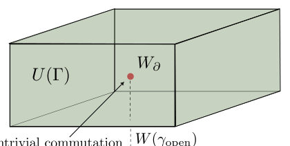
<figcaption class="paper-figure-caption"><b>Fig 1.</b> FIG. 2: Nontrivial commutation relation between the open operators U(Γ) and W(γopen).</figcaption>
</figure>
<figure class="paper-figure-card">
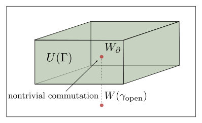
<figcaption class="paper-figure-caption"><b>Fig 2.</b> FIG. 3: Geometric realization of the nontrivial algebra before gauging (left) and after</figcaption>
</figure>
<figure class="paper-figure-card">
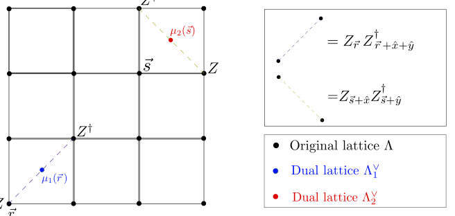
<figcaption class="paper-figure-caption"><b>Fig 3.</b> FIG. 4: Operators of the bond algebra in Eq. (6.28). The dual lattice Λ∨ 1 contains the blue</figcaption>
</figure>
<figure class="paper-figure-card">
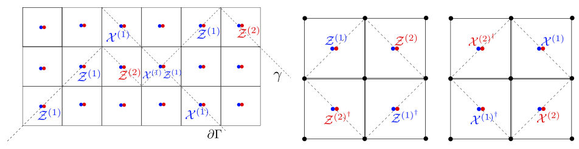
<figcaption class="paper-figure-caption"><b>Fig 4.</b> FIG. 5: (a) 1-form symmetry operator W (α)(γ) composed of Z(i) operators, and U (α) ∂ (∂Γ)</figcaption>
</figure>
</div>

<p><strong>Summary.</strong> This work establishes a systematic mathematical framework to classify modulated symmetries in lattice models. By constructing the algebra of symmetry-allowed local interactions and performing a gauging procedure, the authors derive a direct microscopic understanding of Abelian crystalline symmetry-enriched topological phases. This provides powerful tools for predicting and characterizing exotic quantum states in condensed matter systems.</p>
<p><strong>Why it may be interesting.</strong> The rigorous mathematical framework for classifying topological phases based on underlying lattice symmetries is highly relevant for understanding exotic quantum states in strongly correlated materials.</p>
<details>
<summary>Detailed structure</summary>
<p><strong>Main problem.</strong> The paper develops a constructive framework to characterize modulated symmetries and their gauging in $d$-dimensional lattice systems.</p>
<p><strong>Main result.</strong> This framework provides a microscopic route to Abelian crystalline symmetry-enriched topological (SET) phases, which are characterized by specific constraints on their electric and magnetic sectors.</p>
<p><strong>Method.</strong> The authors use a kernel construction to derive symmetry-allowed local interactions (the bond-algebra) and then analyze the gauging procedure to generate emergent higher-form quantum symmetries.</p>
<p><strong>Model / system.</strong> The study focuses on $d$-dimensional lattice systems possessing a space group symmetry and an internal discrete Abelian symmetry group. The analysis is systematic, linking the symmetry content to the structure of local interactions.</p>
<p><strong>Key observables.</strong> Mixed 't Hooft anomaly, braiding pairing, topological entanglement entropy (implied by SETs).</p>
<p><strong>Important parameters / regimes.</strong> The relationship $q + \chi = t$ links the number of symmetry generators ($q$), independent local interactions ($\chi$), and the stencil size ($t$).</p>
<p><strong>Assumptions / limitations.</strong> The space group action is assumed to factor through a finite quotient, leading to periodic modulation patterns.</p>
<p><strong>Figures summary.</strong> TABLE I summarizes representative examples of modulated symmetries on 2D square lattices, listing parameters like $(q, \chi, t)$ and modulation periods.</p>
<p><strong>Paper structure.</strong> The paper proceeds by defining the symmetry structure, deriving the constraints on local interactions via the bond-algebra, and then analyzing the consequences of gauging these symmetries to identify the resulting topological phases.</p>
</details>
<details>
<summary>Abstract</summary>
<p>We develop a constructive framework for characterizing modulated symmetries and their gauging in $d$-dimensional lattice systems. The modulation profiles are organized as a finite-dimensional representation of the space group acting on a finite Abelian internal symmetry group. Since the corresponding automorphism group is finite, the nontrivial spatial action factors through a finite quotient of the space group, leading to periodic modulation patterns and providing a classification framework for discrete Abelian modulated symmetries. The symmetry-allowed local interactions are systematically obtained from a kernel construction, which also yields an algebra of open operators. Upon gauging, its elements are transmuted into extended Wilson and boundary operators while retaining their algebraic relations. In the deconfined regime, the resulting algebra realizes a mixed 't Hooft anomaly, providing a microscopic route to Abelian crystalline symmetry-enriched topological phases (SETs). These SETs do not mix electric and magnetic sectors, which transform in mutually contragredient representations, thereby preserving their braiding pairing. We illustrate the framework through explicit examples and show that several models present in the literature fit naturally within our construction.</p>
</details>
<p><sub><a href="#top">↑ back to top</a></sub></p>

<p><a id="paper-2610.12148"></a></p>
<h3 id="large-scale-benchmarking-of-quantum-neural-network-configurations-for-financial-time-series-forecasting"><a href="http://arxiv.org/abs/2610.12148v1">Large-Scale Benchmarking of Quantum Neural Network Configurations for Financial Time Series Forecasting</a></h3>
<p><strong>Authors:</strong> Jack Waller, Xing Liang, Dimitrios Makris, Rajagopal Nilavalan<br>
<strong>Type:</strong> both · <strong>Category:</strong> other · <strong>PDF:</strong> <a href="https://arxiv.org/pdf/2610.12148v1">https://arxiv.org/pdf/2610.12148v1</a><br>
<strong>Analysis basis:</strong> full PDF text, analyzed in chunks
<strong>Topic relevance:</strong> <code>QC/QI experiment</code> <strong>2/5</strong></p>
<div class="figure-strip-hint">↔ Scroll figures horizontally</div>
<div class="paper-figures-scroll">
<figure class="paper-figure-card">
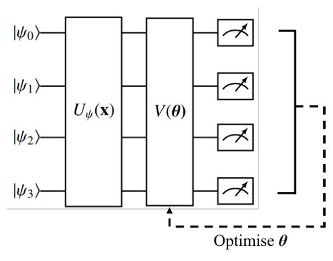
<figcaption class="paper-figure-caption"><b>Fig 1.</b> Fig. 1: The quantum circuit of a basic QNN. |ψi⟩are the initial quantum states, Uψ(x) is the data encoding circuit, and V (θ) is the ansatz, which is then followed by measurement on all qubits. Parameters θ are then optimised and updated in V (θ).</figcaption>
</figure>
<figure class="paper-figure-card">
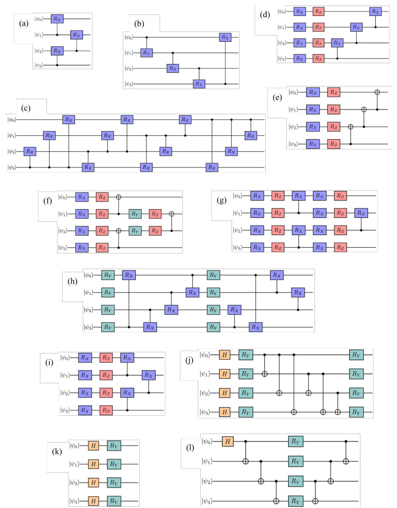
<figcaption class="paper-figure-caption"><b>Fig 2.</b> Fig. 2: A collection of ansatz used in this study, each with varying expressibility, entangling capabil- ities and circuit depth.</figcaption>
</figure>
<figure class="paper-figure-card">
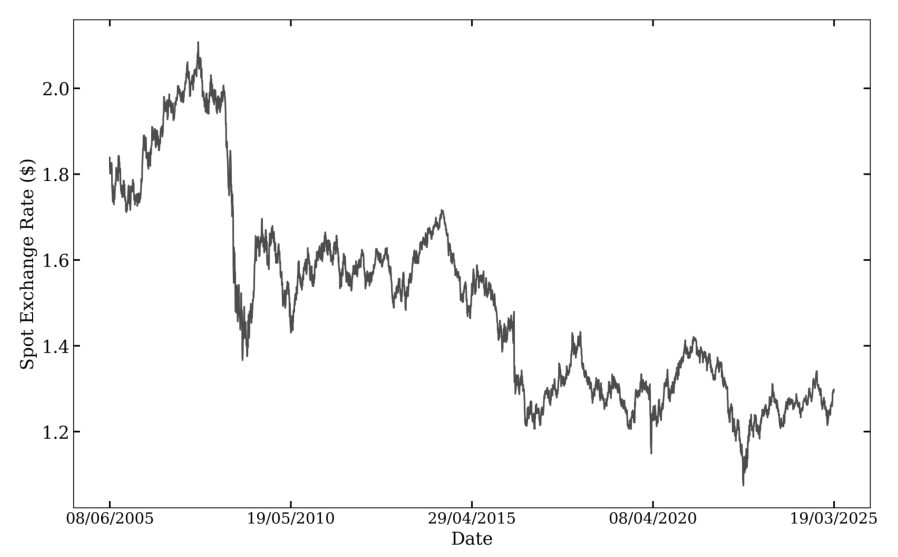
<figcaption class="paper-figure-caption"><b>Fig 3.</b> Fig. 3: The spot exchange rate ($) for the GBP/USD currency pair from 08/06/2005 to 19/03/2025.</figcaption>
</figure>
<figure class="paper-figure-card">
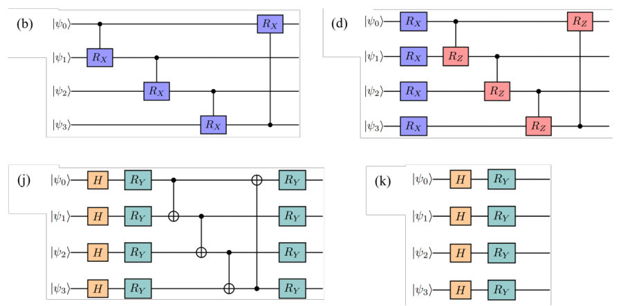
<figcaption class="paper-figure-caption"><b>Fig 4.</b> Fig. 5: Modified hardware ansatz variants with two-qubit gates restricted to nearest-neighbour qubit connectivity, derived from ansatz (b), (d), (j), and (k).</figcaption>
</figure>
<figure class="paper-figure-card">
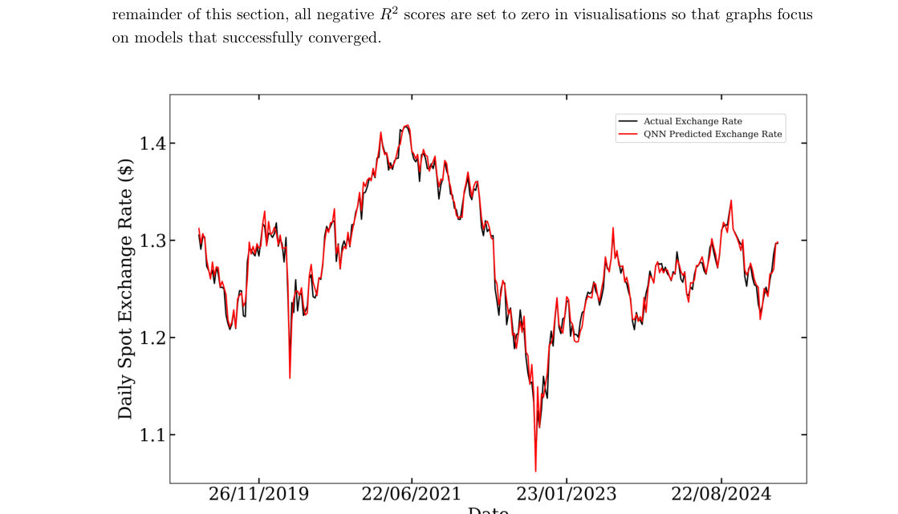
<figcaption class="paper-figure-caption"><b>Fig 5.</b> Fig. 6: Best individual result for angle encoding, with an R2 score of 0.98495. The model used angle encoding, ansatz (j), 4 qubits, 8 layers, a classical MSE cost function and occurred on the 5th run. The black line shows the true GBP/USD spot exchange rate and the red line shows the models simulated predicted price.</figcaption>
</figure>
</div>

<p><strong>Summary.</strong> This paper conducts a massive, systematic benchmark of Quantum Neural Network designs for forecasting financial time series data. By testing 1,368 configurations, it shows QNNs can outperform classical models on the GBP/USD rate. Crucially, it also quantifies the impact of real quantum hardware noise, providing architectural guidelines for near-term quantum machine learning.</p>
<p><strong>Why it may be interesting.</strong> While focused on finance, the rigorous comparison of circuit components (encoding, ansatz structure) and the explicit analysis of hardware noise resilience provide general architectural guidance for any quantum algorithm applied to complex physical systems.</p>
<details>
<summary>Detailed structure</summary>
<p><strong>Main problem.</strong> The study systematically evaluates Quantum Neural Network (QNN) configurations for the regression task of financial time series forecasting, an area less explored than classification.</p>
<p><strong>Main result.</strong> The best QNN configuration achieved an $R^2$ score of 0.985, outperforming a classical BiLSTM baseline, though hardware noise remains a significant barrier to practical deployment.</p>
<p><strong>Method.</strong> A large-scale grid search was performed across 1,368 distinct QNN configurations, varying encoding methods, ansatz designs, qubit counts, and layer depths.</p>
<p><strong>Model / system.</strong> The model uses QNNs with parameterised quantum circuits (PQCs) applied to the GBP/USD spot exchange rate. The process involves data encoding (e.g., amplitude or angle encoding), quantum processing via an ansatz, and optimization.</p>
<p><strong>Key observables.</strong> Prediction accuracy ($R^2$ score), computational cost, convergence behaviour, and resilience to gate errors/decoherence.</p>
<p><strong>Important parameters / regimes.</strong> Qubit counts, layer depths, specific gate selection and arrangement, and the level of quantum hardware noise (gate errors, decoherence).</p>
<p><strong>Assumptions / limitations.</strong> The study assumes that systematic architectural tuning can yield superior performance, but it also highlights that current hardware noise limits practical deployment.</p>
<p><strong>Figures summary.</strong> Not specified, but the study compares various ansatz designs and analyzes the impact of hardware noise on performance.</p>
<p><strong>Paper structure.</strong> The paper moves from establishing the need for systematic QNN comparison in regression tasks to detailing the grid search methodology, presenting performance results against classical baselines, and concluding with an analysis of hardware noise limitations.</p>
</details>
<details>
<summary>Abstract</summary>
<p>Quantum machine learning, and quantum neural networks (QNNs) in particular, are advancing fields with growing potential. Although systematic comparisons of QNN configurations have been explored primarily for classification tasks, comparatively little attention has been given to regression problems, particularly financial time series forecasting. This study presents a large-scale systematic comparative evaluation of QNN component configurations for financial time series forecasting, using the GBP/USD spot exchange rate as a case study. A grid search across encoding methods, ansatz designs, qubit counts, layer depths, and cost functions yields 1,368 distinct model configurations, each evaluated in terms of prediction accuracy, computational cost, and convergence behaviour. The results reveal unique insights into how the choice of methods influences performance, such as that gate selection and arrangement are more critical to model success than raw parameter count, and that entanglement is a system-level property of the full circuit rather than solely at the ansatz level. The best-performing QNN configuration achieves an $R^2$ score of 0.985, outperforming a classical BiLSTM baseline. Additionally, the impact of real quantum hardware noise is assessed through execution on the IQM Emerald device, revealing that gate errors and decoherence represent a significant barrier to practical deployment, with gate selection and circuit depth identified as key determinants of hardware noise resilience. Overall, the findings provide practical architectural guidance for QNN design and establish a baseline characterisation of QNN noise sensitivity on near-term quantum devices.</p>
</details>
<p><sub><a href="#top">↑ back to top</a></sub></p>

<p><a id="paper-2610.12098"></a></p>
<h3 id="nearly-optimal-t-count-for-symmetry-based-quantum-state-purification"><a href="http://arxiv.org/abs/2610.12098v1">Nearly Optimal T-Count for Symmetry-Based Quantum State Purification</a></h3>
<p><strong>Authors:</strong> Jialiang Tang, Junhong Nie, Keming He, Xin Wang, Xiaoming Sun<br>
<strong>Type:</strong> theory · <strong>Category:</strong> quantum information and computing · <strong>PDF:</strong> <a href="https://arxiv.org/pdf/2610.12098v1">https://arxiv.org/pdf/2610.12098v1</a><br>
<strong>Analysis basis:</strong> full PDF text, analyzed in chunks
<strong>Topic relevance:</strong> <code>quantum measurements</code> <strong>2/5</strong></p>
<div class="figure-strip-hint">↔ Scroll figures horizontally</div>
<div class="paper-figures-scroll">
<figure class="paper-figure-card">
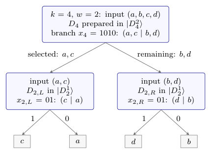
<figcaption class="paper-figure-caption"><b>Fig 1.</b> FIG. 1. Balanced binary tree for four copies. Each inter- nal node has a Dicke mask that selects the copies sent to its left child. The figure follows one computational branch, z = 1010∥01∥01, from input (a, b, c, d) to output (c, a, d, b). Child masks refer to the positions after the parent partition. All 6 · 2 · 2 = 24 valid collections are present with equal am- plitude. The root’s intermediate ordering uses the five-switch network displayed in Fig. 3.</figcaption>
</figure>
<figure class="paper-figure-card">
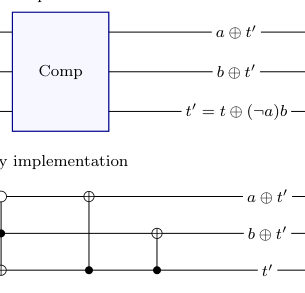
<figcaption class="paper-figure-caption"><b>Fig 2.</b> FIG. 2. Quantum comparator. The symbol ⊕denotes addi- tion modulo two. The record is updated to t′ = t ⊕(¬a)b before the two key bits are flipped under its control. With input t = 0, the key outputs are max(a, b), min(a, b). The open control denotes control on zero. The inverse compara- tor reverses the displayed gates.</figcaption>
</figure>
<figure class="paper-figure-card">
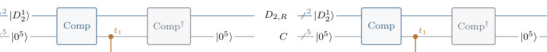
<figcaption class="paper-figure-caption"><b>Fig 3.</b> FIG. 3. Permutation-based LCU for four copies. (a) P, S, and P † implement the accepted operator Π4,d. (A slash marks a bundled multi-qubit wire.) (b,c) The mask inputs are the prepared Dicke states |D2 4⟩and |D1 2⟩. Routing can entangle masks with data, so no separate output ket is assigned to a mask wire. (b) Each recorded tj controls the following amber data SWAP. Inverse comparators 5, 4, 3, 2, 1 clear C while retaining the data permutation. (c) Each child compares, swaps, and uncomputes. The order in (a) allows reuse of C; inverse gates act only on masks and controls.</figcaption>
</figure>
</div>

<p><strong>Summary.</strong> This theoretical work establishes the fundamental resource cost for quantum state purification by analyzing the T-gate count needed to implement the symmetric-projection protocol. By deriving matching upper and lower bounds, the authors prove that the required non-Clifford resources scale nearly optimally with the number of noisy copies. This result provides a crucial benchmark for quantum information processing protocols.</p>
<p><strong>Why it may be interesting.</strong> The rigorous resource quantification of quantum error correction primitives, like state purification, is fundamental to scaling up quantum computation and understanding the limits of quantum memory.</p>
<details>
<summary>Detailed structure</summary>
<p><strong>Main problem.</strong> The paper addresses the challenge of quantum state purification, which aims to boost the fidelity of an unknown quantum state by processing multiple noisy copies.</p>
<p><strong>Main result.</strong> The authors establish that the required non-Clifford resource cost (T-count) for implementing the symmetric-projection purification protocol scales nearly optimally, bounded above by $   ext{eO}(n)$ and below by $2n-2$ T gates.</p>
<p><strong>Method.</strong> The analysis involves constructing and analyzing Clifford+T circuits required to block-encode the symmetric projector $\Pi_{n,d}$, using techniques involving stabilizer nullity and quantum circuit complexity bounds.</p>
<p><strong>Model / system.</strong> The model is the $n$-to-1 probabilistic quantum state purification protocol applied to $d$-dimensional systems corrupted by noise, focusing on the symmetric-projection operator $\Pi_{n,d}$.</p>
<p><strong>Key observables.</strong> T-count (number of T gates), Purification Fidelity ($f_\psi$), Success Probability ($p_n$), and Operator-norm Error ($\epsilon$).</p>
<p><strong>Important parameters / regimes.</strong> Number of copies ($n$), local dimension ($d$), and the error tolerance ($\epsilon$).</p>
<p><strong>Assumptions / limitations.</strong> The analysis assumes the use of Clifford+T circuits and focuses on the uniform operator-norm approximation of the symmetric projector.</p>
<p><strong>Figures summary.</strong> The notes mention figures illustrating the balanced binary tree structure used for encoding permutations and the general comparison of T-counts for various purification methods.</p>
<p><strong>Paper structure.</strong> The paper progresses by first defining the purification problem and the symmetric projector, then deriving an upper bound on the T-count using a specific circuit construction (Dicke balanced tree mask), and finally establishing a matching lower bound using stabilizer nullity arguments.</p>
</details>
<details>
<summary>Abstract</summary>
<p>Protecting quantum information from noise is essential for reliable quantum computation and quantum memories. Quantum state purification addresses this challenge by processing multiple noisy copies of an unknown quantum state to produce an output state of higher fidelity. Here we establish nearly tight upper and lower bounds on the non-Clifford resources required to implement the symmetric-projection purification protocol. For $n$ copies of a $d$-dimensional system, we construct a Clifford+T circuit that block-encodes the symmetric projector with operator-norm error at most $ε$ using $\widetilde{O}(n)$ T gates, where the tilde-$O$ notation suppresses polylogarithmic factors in $n$, $d$, and $1/ε$. Conversely, using stabilizer nullity, we prove that any Clifford+T implementation of such a block encoding with error $ε<\frac{1}{2}\sqrt{1-1/n}$ requires at least $2n-2$ T gates, even allowing arbitrary positive normalization and clean stabilizer ancillas. Taken together, these results establish the nearly optimal scaling of non-Clifford cost with the number of copies and uncover the fundamental resource requirements for coherent symmetry projection in quantum state purification.</p>
</details>
<p><sub><a href="#top">↑ back to top</a></sub></p>

<p><a id="paper-2610.11874"></a></p>
<h3 id="sharing-of-gaussian-tripartite-steering-in-de-sitter-space"><a href="http://arxiv.org/abs/2610.11874v1">Sharing of Gaussian tripartite steering in de-Sitter space</a></h3>
<p><strong>Authors:</strong> Xin-Ze Song, Xiao-Li Huang, Shu-Min Wu<br>
<strong>Type:</strong> theory · <strong>Category:</strong> other · <strong>PDF:</strong> <a href="https://arxiv.org/pdf/2610.11874v1">https://arxiv.org/pdf/2610.11874v1</a><br>
<strong>Analysis basis:</strong> full PDF text, analyzed in chunks
<strong>Topic relevance:</strong> <code>Keldysh / 2PI / non-Gaussian methods</code> <strong>2/5</strong></p>
<div class="figure-strip-hint">↔ Scroll figures horizontally</div>
<div class="paper-figures-scroll">
<figure class="paper-figure-card">
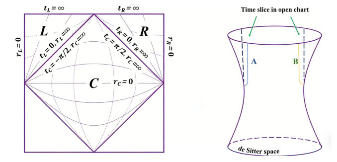
<figcaption class="paper-figure-caption"><b>Fig 1.</b> FIG. 1: The Penrose diagram of the de-Sitter space, in which L and R are the two causally disconnected</figcaption>
</figure>
<figure class="paper-figure-card">
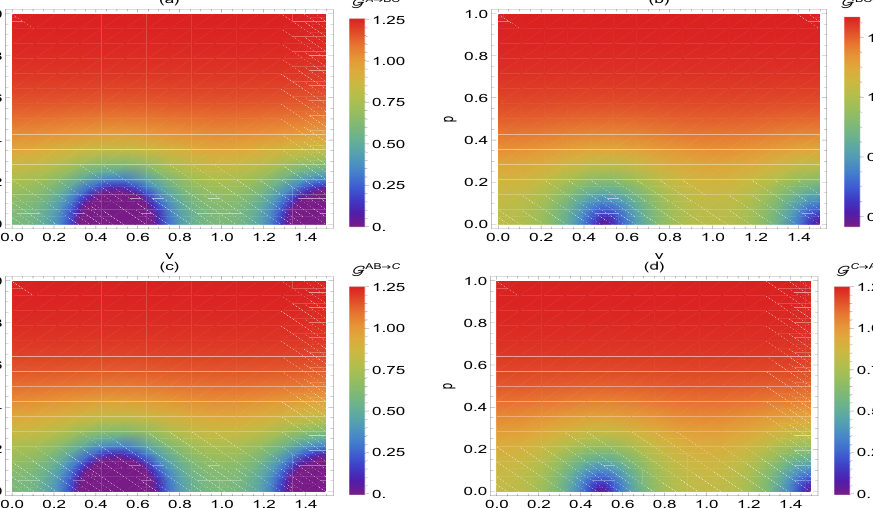
<figcaption class="paper-figure-caption"><b>Fig 2.</b> FIG. 2: The Gaussian quantum steerability GA→BC, GBC→A, GAB→C, and GC→AB as functions of the</figcaption>
</figure>
<figure class="paper-figure-card">
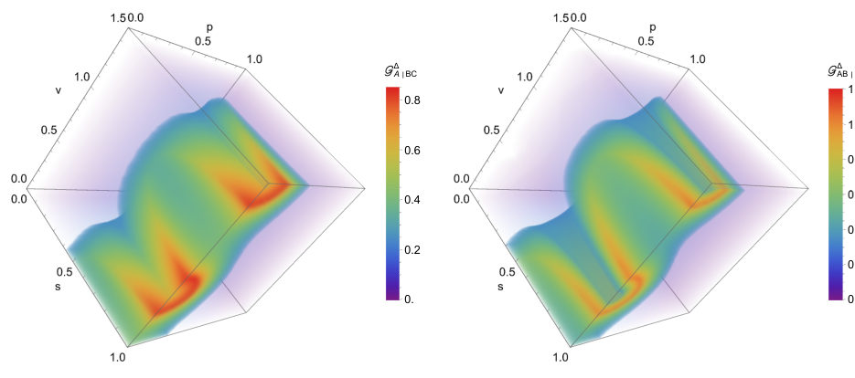
<figcaption class="paper-figure-caption"><b>Fig 3.</b> FIG. 3: The Gaussian tripartite steering asymmetry G∆ A|BC and G∆ AB|C as functions of the curvature param-</figcaption>
</figure>
<figure class="paper-figure-card">

<figcaption class="paper-figure-caption"><b>Fig 4.</b> Fig. 3 shows the Gaussian steering asymmetries G∆ A|BC and G∆ AB|C as functions of the curvature</figcaption>
</figure>
<figure class="paper-figure-card">
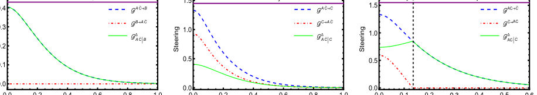
<figcaption class="paper-figure-caption"><b>Fig 5.</b> FIG. 4: Gaussian tripartite steering and steering asymmetries between initially uncorrelated modes as func-</figcaption>
</figure>
</div>

<p><strong>Summary.</strong> This theoretical paper analyzes how quantum correlations, specifically Gaussian tripartite steering, behave for a scalar field in de-Sitter spacetime. Using advanced quantum field theory techniques, the authors show that the spacetime curvature not only weakens existing correlations but also generates novel, directional steering between modes separated by the cosmological horizon. This highlights the profound interplay between gravity and quantum information.</p>
<p><strong>Why it may be interesting.</strong> The study provides a concrete example of how spacetime curvature (a gravitational effect) fundamentally alters quantum correlations, generating new types of entanglement/steering across regions that would otherwise be causally disconnected.</p>
<details>
<summary>Detailed structure</summary>
<p><strong>Main problem.</strong> The paper investigates the redistribution and directional properties of Gaussian tripartite quantum steering in the curved spacetime of de-Sitter space.</p>
<p><strong>Main result.</strong> De-Sitter curvature both degrades pre-existing quantum correlations and actively generates directional multipartite steering across causally disconnected regions, exhibiting rich behaviors like sudden death and sudden birth.</p>
<p><strong>Method.</strong> The analysis uses the continuous-variable framework, deriving and analyzing the covariance matrix of the resulting multipartite Gaussian state after transforming the Bunch-Davies vacuum via Bogoliubov transformations.</p>
<p><strong>Model / system.</strong> The system is a free massive scalar field propagating in de-Sitter space. The analysis focuses on Gaussian quantum states shared among three parties (A, B, C) and involves considering modes separated by the cosmological horizon.</p>
<p><strong>Key observables.</strong> Gaussian tripartite quantum steering measures ($G_{XY	o Z}$), covariance matrices ($\sigma_{ABC}$), and steering asymmetry.</p>
<p><strong>Important parameters / regimes.</strong> De-Sitter curvature (related to the Hubble radius $H^{-1}$), field mass parameter ($
u$), and the initial squeezing parameter ($s$).</p>
<p><strong>Assumptions / limitations.</strong> The analysis is performed within the continuous-variable Gaussian state framework, and certain reduced states are obtained by tracing over inaccessible modes.</p>
<p><strong>Figures summary.</strong> Figure 1 is noted to be a Penrose diagram of de-Sitter space, illustrating the causally disconnected regions L and R.</p>
<p><strong>Paper structure.</strong> The paper builds from the general formalism of Gaussian steering in curved spacetime, deriving the covariance matrix for the three-mode state, and then analyzing specific steering measures by considering the effects of tracing out modes associated with causally disconnected regions.</p>
</details>
<details>
<summary>Abstract</summary>
<p>We investigate the redistribution and directional properties of Gaussian tripartite quantum steering in de-Sitter space within the continuous-variable framework. By expressing the Bunch-Davies vacuum in terms of the open-chart modes through a Bogoliubov transformation, we derive the covariance matrix of the resulting multipartite Gaussian state and analyze both one-to-two and two-to-one steering configurations. We find that de-Sitter curvature generally suppresses the steering initially shared among the accessible modes, but its influence depends strongly on the steering direction. In particular, while some steering configurations undergo sudden death at finite curvature, two-to-one steering toward a nongravitational mode remains finite throughout the parameter range considered, demonstrating a robustness of tripartite steering absent in its bipartite counterpart. Remarkably, the maximum steering asymmetry occurs at the critical point at which steering in one direction undergoes sudden death, marking the transition from two-way to one-way steering. We further show that the de-Sitter gravitational field can generate tripartite steering involving modes separated by the cosmological horizon. Depending on the steering partition, this curvature-induced steering exhibits persistent one-way or asymmetric two-way behavior, as well as a sudden-birth transition from one-way to two-way steering. These results demonstrate that de-Sitter curvature not only degrades preexisting quantum correlations but also redistributes and generates directional multipartite steering across causally disconnected regions.</p>
</details>
<p><sub><a href="#top">↑ back to top</a></sub></p>

<p><a id="paper-2610.10682"></a></p>
<h3 id="spin-chain-with-continuous-exponential-symmetry-topological-phase-and-beyond"><a href="http://arxiv.org/abs/2610.10682v1">Spin Chain with Continuous Exponential Symmetry: Topological Phase and Beyond</a></h3>
<p><strong>Authors:</strong> Biao Lian, Zhen Bi<br>
<strong>Type:</strong> theory · <strong>Category:</strong> strongly correlated electrons · <strong>PDF:</strong> <a href="https://arxiv.org/pdf/2610.10682v1">https://arxiv.org/pdf/2610.10682v1</a><br>
<strong>Analysis basis:</strong> full PDF text, analyzed in chunks
<strong>Topic relevance:</strong> <code>analog quantum simulation</code> <strong>2/5</strong></p>
<div class="figure-strip-hint">↔ Scroll figures horizontally</div>
<div class="paper-figures-scroll">
<figure class="paper-figure-card">
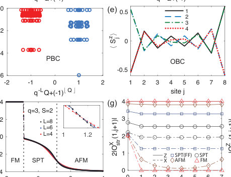
<figcaption class="paper-figure-caption"><b>Fig 1.</b> FIG. 1. (a) Illustration of the AKLT-like ground state. (b-g) ED results for q = 3, S = 2 (at L = 8, except for (f)). (b-d) show the energy spectra of (b) ˆHFF in OBC, and (c-d) ˆH in Eq. (2) at V = 0.5, with OBC in (c) and PBC in (d). (e) ⟨ˆSz j ⟩ of the 4 OBC ground states in (c). (f) 1</figcaption>
</figure>
<figure class="paper-figure-card">
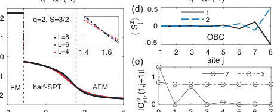
<figcaption class="paper-figure-caption"><b>Fig 2.</b> FIG. 3. ED results for the half-SPT phase of ˆH with q = 2, S = 3/2, where L = 8, V = 0.5 except for (c). (a) and (b) show the ED spectra in OBC and PBC, respectively. (c) 1 L dEGS</figcaption>
</figure>
</div>

<p><strong>Summary.</strong> This paper theoretically classifies topological phases in 1D spin chains possessing a continuous exponential symmetry. It introduces a novel 'half-SPT' phase, distinct from standard SPT phases, whose existence is dictated by the interplay between the spin value ($S$) and the symmetry parameter ($q$). The work uses advanced tools like string orders and entanglement spectra to map out a richer phase diagram for quantum magnets.</p>
<p><strong>Why it may be interesting.</strong> The discovery of the 'half-SPT' phase and the demonstration that topological protection can exist even when conventional cohomology indices are trivial extends the classification of gapped phases, which is highly relevant for understanding exotic quantum materials.</p>
<details>
<summary>Detailed structure</summary>
<p><strong>Main problem.</strong> The study investigates symmetric gapped ground states in one-dimensional spin chains characterized by a continuous exponential symmetry $U(1) 
times \mathbb{Z}_2$. The primary goal is to classify novel symmetry-protected gapped phases beyond existing theoretical frameworks.</p>
<p><strong>Main result.</strong> The paper distinguishes between standard SPT phases and a novel 'half-SPT' phase, whose existence and properties depend critically on the parity of the base $q$ and the spin $S$. For half-odd integer $S$ and even $q$, a half-SPT phase is predicted, exhibiting unique edge mode characteristics.</p>
<p><strong>Method.</strong> The analysis combines theoretical investigation using symmetry properties (cohomology groups) with numerical simulations like Exact Diagonalization (ED) and advanced techniques such as MPS representation and string order calculations.</p>
<p><strong>Model / system.</strong> The system is a 1D spin $S$ chain governed by a quantum breakdown model Hamiltonian, which is a $q$-deformation of the XXZ Haldane spin chain. The symmetry group is $G = U(1) 
times \mathbb{Z}_2$, and the charge unit is modulated exponentially by $q^{L-j}$.</p>
<p><strong>Key observables.</strong> Edge mode protection, string orders ($ ext{str}<em GS>Z,     ext{str}_X$), entanglement spectrum degeneracy, and the ground state energy density derivative $rac{1}{L}rac{dE</em>$.}}{dV</p>
<p><strong>Important parameters / regimes.</strong> Spin $S$ (integer or half-odd integer), integer base $q$, and the parity of $q$ and $S$.</p>
<p><strong>Assumptions / limitations.</strong> The analysis relies on the structure of the symmetry group $G$ and the assumption that the ground state can be characterized by its entanglement spectrum or string orders.</p>
<p><strong>Figures summary.</strong> Figures illustrate ED spectra for various parameters ($q=3, q=2$), showing transitions between FM, SPT, half-SPT, and BC phases. Phase diagrams map out the parameter space dependence using energy density derivatives.</p>
<p><strong>Paper structure.</strong> The paper systematically analyzes the system based on the parity of $q$ and $S$. It first establishes the model and symmetry, then derives the conditions for SPT phases (e.g., integer $S$, odd $q$), and finally introduces and characterizes the novel 'half-SPT' phase for half-odd integer $S$ and even $q$.</p>
</details>
<details>
<summary>Abstract</summary>
<p>We study symmetric gapped ground states of one-dimensional spin $S$ chains with a continuous exponential symmetry $U(1)\rtimes\mathbb Z_2$ with integer base $q$, where the U(1) charge has a modulated unit of charge $q^{L-j}$ decaying exponentially with site $j$. The simplest model is a quantum breakdown model that can be viewed as a $q$-deformation of the XXZ Haldane spin chain. We show that the topology of their symmetric ground states crucially depends on $S$ and $q$. For integer $S$, odd $q$ allows a nontrivial $\mathbb Z_2$ Haldane-type symmetry-protected topological (SPT) phase with protected edge modes, while even $q$ allows no nontrivial SPT phase. For half-odd integer $S$, odd $q$ prohibits any unique symmetric gapped ground state due to a Lieb-Schultz-Mattis obstruction, whereas even $q$ enforces a novel symmetric gapped phase which we name as the ``half-SPT" phase. Unconventionally, the half-SPT phase only has a symmetry protected edge mode on one edge, and has half of the string orders of an SPT phase. Our results uncover a new type of symmetry-protected gapped phases beyond existing classification schemes.</p>
</details>
<p><sub><a href="#top">↑ back to top</a></sub></p>

<p><a id="paper-2610.12136"></a></p>
<h3 id="dynamical-many-body-control-of-high-harmonic-generation-in-a-mott-insulator"><a href="http://arxiv.org/abs/2610.12136v1">Dynamical many-body control of high harmonic generation in a Mott insulator</a></h3>
<p><strong>Authors:</strong> Mingyao Guo, Ryo Noguchi, Mohammad Muntasir Hassan, Steven J. Gomez Alvarado, Reina M. Gomez, Yao-Jui Chan, Yu-Chieh Wen, Stephen D. Wilson, Yao Wang, David Hsieh<br>
<strong>Type:</strong> both · <strong>Category:</strong> strongly correlated electrons · <strong>PDF:</strong> <a href="https://arxiv.org/pdf/2610.12136v1">https://arxiv.org/pdf/2610.12136v1</a><br>
<strong>Analysis basis:</strong> full PDF text, analyzed in chunks
<strong>Topic relevance:</strong> <code>Keldysh / 2PI / non-Gaussian methods</code> <strong>1/5</strong> · <code>analog quantum simulation</code> <strong>1/5</strong> · <code>interference shaping light</code> <strong>1/5</strong> · <code>methods for driven-dissipative</code> <strong>1/5</strong> · <code>quantum measurements</code> <strong>1/5</strong> · <code>quantum optics experiment</code> <strong>1/5</strong></p>
<div class="figure-strip-hint">↔ Scroll figures horizontally</div>
<div class="paper-figures-scroll">
<figure class="paper-figure-card">
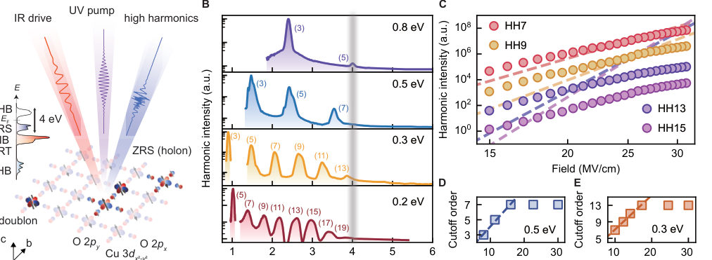
<figcaption class="paper-figure-caption"><b>Fig 1.</b> FIG. 1. HHG from bulk La2CuO4. (A) Schematic of experimental geometry and microscopic processes of HHG in a cuprate Mott insulator. The left inset shows a sketch of density of states at different energy hierarchies, and equilibrium occupied states are filled with color. NB, non-bonding oxygen band; ZRT, Zhang-Rice triplet. (B) HHG intensity spectra from a La2CuO4 single crystal at various driving photon energies on a logarithmic scale. The nth harmonic orders are labeled as (n). The grey shade marks the global cutoff energy around 4 eV. (C) Dependence of the strength of individual harmonics on the peak field of a 0.2 eV driving laser on a log-log scale. Different orders are rescaled for...</figcaption>
</figure>
<figure class="paper-figure-card">
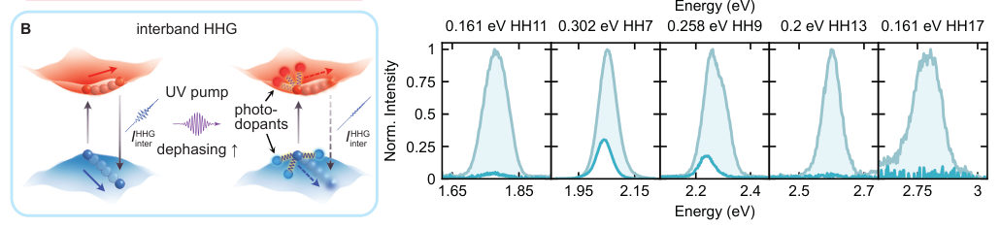
<figcaption class="paper-figure-caption"><b>Fig 2.</b> FIG. 2. Time-resolved HHG spectroscopy of La2CuO4. (A), (B) Schematic of how intra- (A) and inter-band (B) HHG processes respond to photo-excited carriers in momentum space. The left and right panels show the dynamics before and after photo-doping, respectively. (C) Transient HHG spectra following a 1 mJ/cm2 3.1 eV pump normalized by their equilibrium maximal intensity at time delay t = 300 fs. The upper and lower panels display the responses of below- and above-gap high harmonics, respectively.</figcaption>
</figure>
<figure class="paper-figure-card">
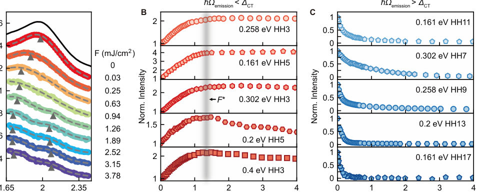
<figcaption class="paper-figure-caption"><b>Fig 3.</b> FIG. 3. Light-induced many-body band renormalization reshapes HHG from La2CuO4. (A) Broadband transient reflectivity spectra at time delay t = 300 fs for various 400 nm pump fluences. The topmost black curve displays the equilibrium spectrum. Local peak positions extracted from fits (dashed lines) are labeled by triangles (see Supplemental Material Sec. 9 for details of the fitting procedure [18]). Curves are vertically offset for clarity. (B) Pump fluence dependence of the integrated transient below-gap HHG intensity at t = 300 fs. The grey shade indicates F ∗determined from broadband reflectivity measurements. (C) Same as (B) but for above-gap HHG.</figcaption>
</figure>
<figure class="paper-figure-card">
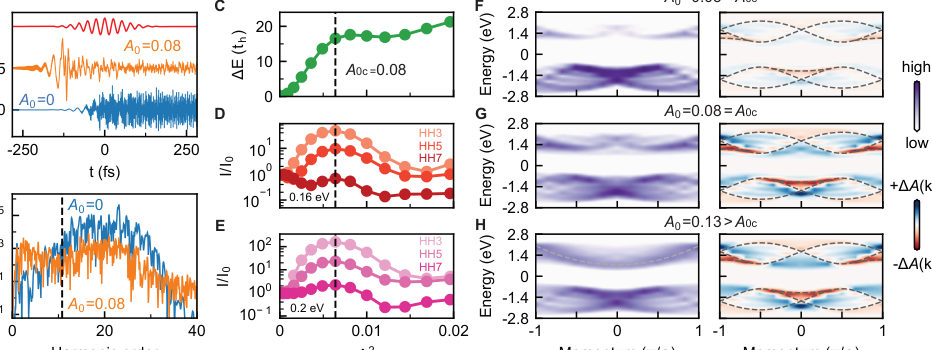
<figcaption class="paper-figure-caption"><b>Fig 4.</b> FIG. 4. Hubbard model numerics. (A) Current in the absence (A0 = 0, blue line) and presence (A0 = 0.08, orange line) of the pump field under the ℏω = 0.16 eV mid-IR driving pulse (red line). Different curves are vertically offset for clarity. (B) HHG spectra of the mid-IR field in the unpumped and pumped conditions same as in (A). The dashed line denotes the Mott gap energy. (C) Pump fluence dependence of pump-injected energies at the end of the pump pulse. (D) Pump fluence dependence of below-gap HHG with ℏω = 0.16 eV. (E) Same as (D) but with ℏω = 0.2 eV. (F)–(H) Single-particle spectral functions A(k, ω) below (F), near (G), and above (H) the threshold field at the end of the pump pulse....</figcaption>
</figure>
</div>

<p><strong>Summary.</strong> This paper uses High Harmonic Generation (HHG) spectroscopy on a Mott insulator to study ultrafast electron dynamics. By analyzing the harmonic spectrum, the authors show that photo-doping causes a fundamental reorganization of the electronic structure, which manifests as a distinct change in the nonlinear optical response. This establishes HHG as a highly sensitive probe for correlation-driven electronic reconstructions in strongly correlated materials.</p>
<p><strong>Why it may be interesting.</strong> This work provides a powerful, non-linear optical diagnostic tool (HHG) to probe subtle, many-body physics—like band reconstruction—that is typically only accessible via advanced theoretical methods, bridging quantum optics and condensed matter theory.</p>
<details>
<summary>Detailed structure</summary>
<p><strong>Main problem.</strong> The study investigates how High Harmonic Generation (HHG) can serve as a sensitive probe to characterize ultrafast electron dynamics and the fundamental electronic reconstructions occurring in strongly correlated Mott insulators.</p>
<p><strong>Main result.</strong> The research demonstrates that photo-doping triggers a fundamental reorganization of the many-body electronic manifolds, evidenced by the suppression of interband recombination channels and the renormalization of band curvature, which is directly imprinted onto the HHG spectrum.</p>
<p><strong>Method.</strong> The authors combine time-resolved HHG spectroscopy on cuprate Mott insulators with detailed numerical simulations using the Hubbard model to disentangle intraband and interband contributions to the nonlinear optical response.</p>
<p><strong>Model / system.</strong> The system is a Mott insulator, exemplified by La2CuO4, modeled using the single-band Hubbard Hamiltonian. The physics revolves around the dynamics of photogenerated doublon-holon pairs within the Upper Hubbard Band (UHB) and Zhang-Rice Singlet (ZRS) manifolds.</p>
<p><strong>Key observables.</strong> HHG spectrum (especially the global cutoff energy), time-resolved harmonic yield (low-order vs. high-order), transient reflectivity, and the charge structure factor N(k).</p>
<p><strong>Important parameters / regimes.</strong> The intrinsic energy scale defined by the Hubbard bands (e.g., 4 eV cutoff), critical excitation density/fluence (e.g., F* or A0c), and the driving field strength.</p>
<p><strong>Assumptions / limitations.</strong> The analysis generalizes the three-step model of HHG to the strongly correlated Mott insulating state, and the simulations rely on mapping the physics onto the Hubbard model.</p>
<p><strong>Figures summary.</strong> Figures show HHG spectra revealing a constant cutoff, time-resolved spectra comparing pre- and post-doping responses, and simulations tracking the evolution of charge correlations N(k) across critical fluence thresholds.</p>
<p><strong>Paper structure.</strong> The paper progresses from establishing HHG in Mott insulators (observing the intrinsic cutoff) to using time-resolved techniques to separate intraband/interband contributions, culminating in theoretical modeling that links spectral weight renormalization to the breakdown of spatial pair correlations.</p>
</details>
<details>
<summary>Abstract</summary>
<p>High harmonic generation (HHG) has emerged as a powerful probe of ultrafast electron dynamics in solids. However, in strongly correlated materials, where electronic excitations arise from many-body interactions rather than single-particle band dispersion, the field remains in its infancy. Here, we report HHG up to the 23$^{rd}$ order in the prototypical Mott insulator La$_2$CuO$_4$. We observe a robust 4 eV cutoff that is independent of driving field strength, revealing an intrinsic energy scale defined by the Hubbard bands. Using time-resolved high harmonic spectroscopy, we disentangle the distinct contributions of carrier creation, intraband acceleration, and interband recombination to the nonequilibrium radiation spectrum. We demonstrate that photo-doping triggers a fundamental reorganization of the many-body manifolds above a critical excitation density, a process that renormalizes the band curvature and suppresses nonlinear intraband currents, thereby directly imprinting the signature of many-body band reconstruction onto the harmonic emission. These results establish HHG as a sensitive probe of subtle correlation-driven electronic reconstructions and highlight that many-body interactions enable extreme nonlinear optical responses that are highly tunable in nonequilibrium states.</p>
</details>
<p><sub><a href="#top">↑ back to top</a></sub></p>

<p><a id="paper-2610.10700"></a></p>
<h3 id="millisecond-phonon-lifetimes-in-piezoelectric-nanomechanical-resonators"><a href="http://arxiv.org/abs/2610.10700v1">Millisecond phonon lifetimes in piezoelectric nanomechanical resonators</a></h3>
<p><strong>Authors:</strong> Oliver A. Hitchcock, Matthew P. Maksymowych, Kaveh Pezeshki, Takuma Makihara, Erik Szakiel, Chou-Wei Kiang, Daniel Rugar, Amir H. Safavi-Naeini<br>
<strong>Type:</strong> experiment · <strong>Category:</strong> other · <strong>PDF:</strong> <a href="https://arxiv.org/pdf/2610.10700v1">https://arxiv.org/pdf/2610.10700v1</a><br>
<strong>Analysis basis:</strong> full PDF text, analyzed in chunks
<strong>Topic relevance:</strong> <code>QC/QI experiment</code> <strong>1/5</strong> · <code>analog quantum simulation</code> <strong>1/5</strong> · <code>correlated / nonlocal dissipation</code> <strong>1/5</strong> · <code>driven-dissipative phase transition</code> <strong>1/5</strong> · <code>quantum measurements</code> <strong>1/5</strong> · <code>quantum optics experiment</code> <strong>1/5</strong></p>
<div class="figure-strip-hint">↔ Scroll figures horizontally</div>
<div class="paper-figures-scroll">
<figure class="paper-figure-card">
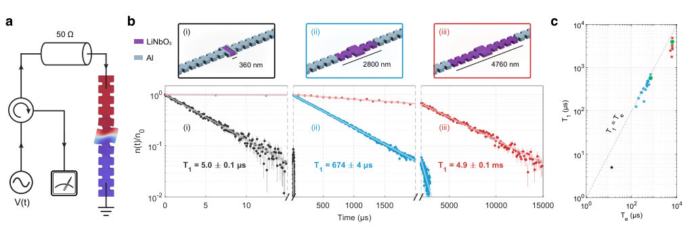
<figcaption class="paper-figure-caption"><b>Fig 1.</b> FIG. 1: Device architecture and phonon lifetime measurements. a, Schematic of our RF reflectometry measurement setup. The LN phononic crystal resonator is cooled to 10 mK in a dilution refrigerator and coupled to a microwave transmission line via aluminum electrodes while the other electrode is grounded. The simulated mechanical shear mode deformation produces the colormapped voltage via the piezoelectric effect. The voltage profile indicates ideal electrode positions to excite the mode of interest. The electrode spacing controls the external coupling rate κe. After the mode is excited, it emits a voltage signal which decays proportionally with the phonon number. b, Device models for three...</figcaption>
</figure>
<figure class="paper-figure-card">
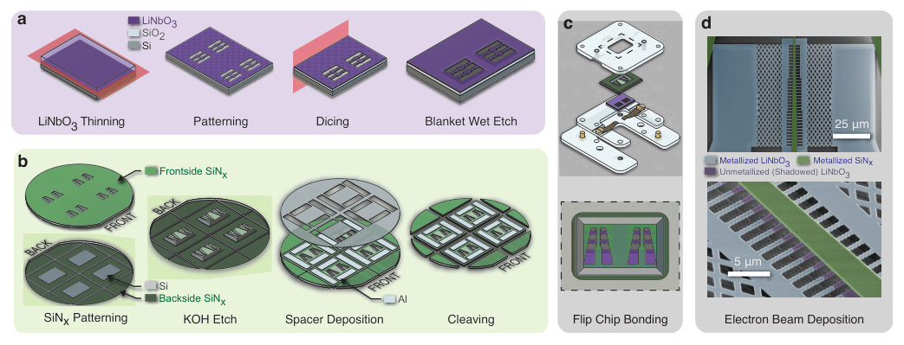
<figcaption class="paper-figure-caption"><b>Fig 2.</b> FIG. 2: Shadow-mask metallization process. a, LN device fabrication: film thinning with SC1 wet etch to remove ion-mill damage, electron-beam patterning, ion-mill etch, wafer dicing, HF release and SC1 surface cleaning. b, Silicon nitride shadow-mask fabrication: frontside patterning, KOH backside Si etch to release freestanding membrane, aluminum spacer deposition using a separately fabricated stencil mask (grey), and cleaving into chips. c, The shadow-mask and device chip are aligned in a flip-chip bonder, clamped in a custom fixture, and loaded into an electron-beam evaporator for aluminum deposition. d, Colorized SEM of a completed device prior to mask removal showing metallized LN...</figcaption>
</figure>
<figure class="paper-figure-card">
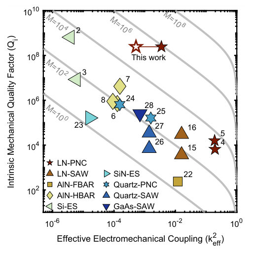
<figcaption class="paper-figure-caption"><b>Fig 3.</b> FIG. 3: Comparison of internal quality factor versus effective electromechanical coupling. Parameters are shown for this work and various other acoustic materials and platforms from the literature, with each point label corresponding to the reference number. Literature k2 eff values are simulation- or circuit-model-derived (Appendix E); for this work, the bar spans the parasitics-loaded measurement (unfilled) and the simulated intrinsic value (filled). Gray lines denote constant resonator figure of merit: M = k2 effQi/(1 −k2 eff).</figcaption>
</figure>
<figure class="paper-figure-card">
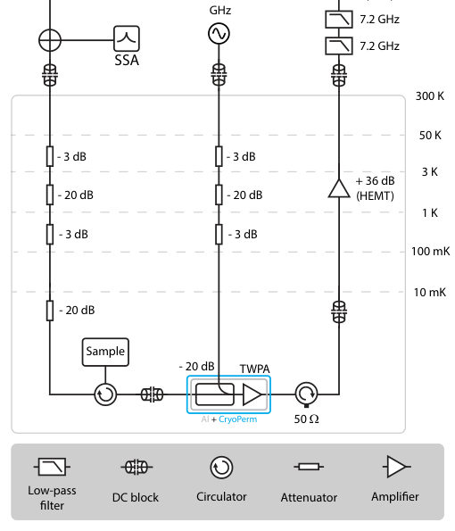
<figcaption class="paper-figure-caption"><b>Fig 4.</b> FIG. 4: Microwave measurement setup. Schematic of the cryogenic wiring and room-temperature electronics used for reflectometry measurements. The device is thermalized to 10 mK at the base stage of a dilution refrigerator. The input line is attenuated to suppress thermal noise, and the output signal is amplified by a near-quantum-limited TWPA followed by a HEMT and room-temperature LNA. A VNA is used for spectroscopy and a Quantum Machines OPX for pulsed ringdown measurements.</figcaption>
</figure>
<figure class="paper-figure-card">
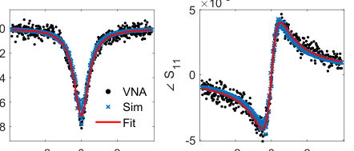
<figcaption class="paper-figure-caption"><b>Fig 5.</b> FIG. 5: Microwave Reflectometry Measurement. The measured magnitude and phase response of a 3.35 GHz device (at 10 mK and n ≈100 phonons) with a designed electrode spacing of 2800 nm is shown as black dots. The corresponding fit of experimental data to Eq. B1 is shown as a red line, while the simulated reflection spectrum from our noisy Langevin model is shown as blue x’s.</figcaption>
</figure>
</div>

<p><strong>Summary.</strong> This paper reports a breakthrough in the coherence of piezoelectric nanomechanical resonators using Lithium Niobate. By developing a specialized fabrication process that removes surface damage, the authors demonstrated intrinsic phonon lifetimes reaching 21 milliseconds. This proves that LN can achieve high quality factors necessary for advanced quantum sensing and information processing.</p>
<p><strong>Why it may be interesting.</strong> The work directly addresses the coherence time of mechanical oscillators, which is a critical component for quantum transducers and quantum memory elements, bridging solid-state physics with quantum information.</p>
<details>
<summary>Detailed structure</summary>
<p><strong>Main problem.</strong> Previous measurements of phonon lifetimes in piezoelectric nanomechanical resonators were limited to the microsecond range, leading to the incorrect assumption that high intrinsic loss was fundamental to piezoelectric materials.</p>
<p><strong>Main result.</strong> By employing a novel fabrication process, the authors demonstrated intrinsic phonon lifetimes up to 21 milliseconds, proving that the limitation was due to surface damage rather than the material itself.</p>
<p><strong>Method.</strong> Phonon lifetime was measured using microwave reflectometry (VNA spectroscopy) by varying the electrode-to-resonator spacing to decouple external coupling losses from intrinsic material losses.</p>
<p><strong>Model / system.</strong> The study uses piezoelectric nanomechanical resonators, specifically Lithium Niobate (LN) phononic crystal resonators, operating at gigahertz frequencies. The system's performance is characterized by its electromechanical coupling and phonon coherence time.</p>
<p><strong>Key observables.</strong> Phonon lifetime ($T_1$), external coupling rate ($\kappa_e$), intrinsic quality factor ($Q_i$), and the electromechanical figure of merit ($M$).</p>
<p><strong>Important parameters / regimes.</strong> Resonance frequencies (3-4 GHz), temperature (mK), and electrode spacing (360 nm to 4760 nm).</p>
<p><strong>Assumptions / limitations.</strong> The primary assumption challenged is that high intrinsic loss is fundamental to piezoelectric LN; the success relies on the novel shadow-mask metallization process to remove surface damage.</p>
<p><strong>Figures summary.</strong> Figures illustrate phonon lifetime ringdown decay showing $T_1$ tracking the external coupling limit as electrode spacing increases, and detail the shadow-mask metallization process.</p>
<p><strong>Paper structure.</strong> The paper systematically compares measured phonon lifetimes ($T_1$) against external coupling limits ($T_e$) across varying electrode spacings. It then quantifies the intrinsic loss ($T_{1,in}$) achieved using a specialized fabrication technique, establishing a high figure of merit ($M$).</p>
</details>
<details>
<summary>Abstract</summary>
<p>Piezoelectric nanomechanical resonators operating at gigahertz frequencies are a promising platform for quantum information processing and precision sensing, but phonon lifetimes have been limited to the microsecond range, widely attributed to the higher intrinsic loss of piezoelectric materials. Here we show that this limitation is not fundamental. Using a fabrication process informed by recent studies of defect-mediated loss in lithium niobate, we combine chemical restoration of ion-milled surfaces with a shadow-mask metallization process to produce lithium niobate phononic crystal resonators with inferred internal phonon lifetimes of up to 21 milliseconds at 3.6 gigahertz, corresponding to quality factors exceeding $4\times10^8$ ($f\cdot Q_i > 10^{18}$) at millikelvin temperatures. By systematically varying the electrode-to-resonator spacing, we demonstrate that the measured lifetime is set by external coupling between the device and the measurement circuit rather than material loss. This establishes that lithium niobate, once fabrication-induced surface damage is removed, achieves an intrinsic quality comparable to the best mechanical materials while remaining an intrinsically piezoelectric platform with strong electromechanical coupling.</p>
</details>
<p><sub><a href="#top">↑ back to top</a></sub></p>

<p><a id="paper-2610.10671"></a></p>
<h3 id="thermodynamics-of-interacting-magnetic-chain-molecules"><a href="http://arxiv.org/abs/2610.10671v1">Thermodynamics of interacting magnetic chain molecules</a></h3>
<p><strong>Authors:</strong> Alexios P. Polychronakos, Konstantinos Sfetsos<br>
<strong>Type:</strong> theory · <strong>Category:</strong> statistical mechanics · <strong>PDF:</strong> <a href="https://arxiv.org/pdf/2610.10671v1">https://arxiv.org/pdf/2610.10671v1</a><br>
<strong>Analysis basis:</strong> full PDF text, analyzed in chunks
<strong>Topic relevance:</strong> <code>Frenkel-Kontorova</code> <strong>1/5</strong> · <code>Keldysh / 2PI / non-Gaussian methods</code> <strong>1/5</strong> · <code>analog quantum simulation</code> <strong>1/5</strong></p>
<div class="figure-strip-hint">↔ Scroll figures horizontally</div>
<div class="paper-figures-scroll">
<figure class="paper-figure-card">
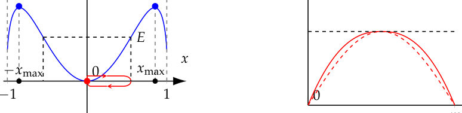
<figcaption class="paper-figure-caption"><b>Fig 1.</b> Figure 2: Left: Schematic path of the fiducial particle in the effective potential V(x) for T &lt; Tc for the deformed x1 mode, showing the energy level E and its corresponding classical turning points. Right: The form of x1(s) for half a period, the red dashed line being the undeformed one corresponding to harmonic motion.</figcaption>
</figure>
<figure class="paper-figure-card">
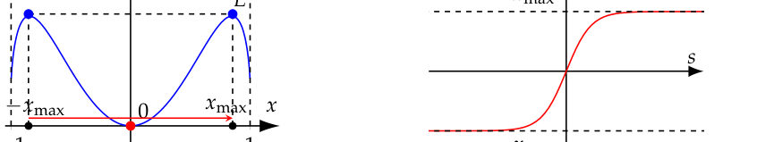
<figcaption class="paper-figure-caption"><b>Fig 2.</b> Figure 3: Left: Path of the fiducial particle moving in the effective potential V(x) for T &lt; Tc for energy E = Vmax between the corresponding classical turning points ±xmax. Right: The corresponding spatial trajectory x(s) exhibiting a soliton (kink) profile.</figcaption>
</figure>
<figure class="paper-figure-card">
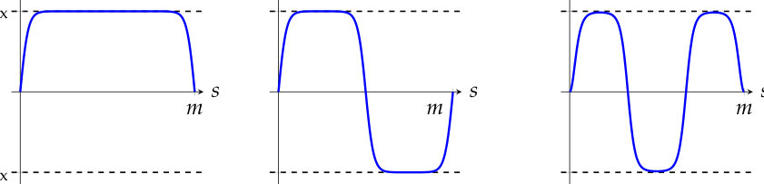
<figcaption class="paper-figure-caption"><b>Fig 3.</b> Figure 4: Magnetization profiles for the k = 1, k = 2, and k = 3 modes along the chain length m, showing flat plateaus at ±xmax.</figcaption>
</figure>
<figure class="paper-figure-card">
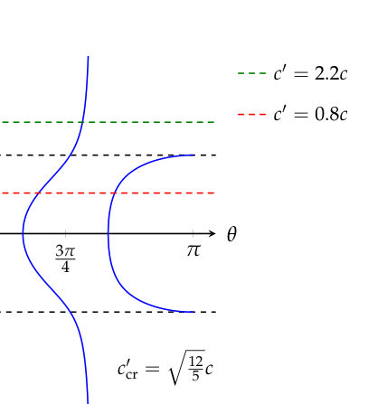
<figcaption class="paper-figure-caption"><b>Fig 4.</b> Figure 5: Plot of the left hand side of (3.75) for m = 6 and representative c′ values.</figcaption>
</figure>
<figure class="paper-figure-card">
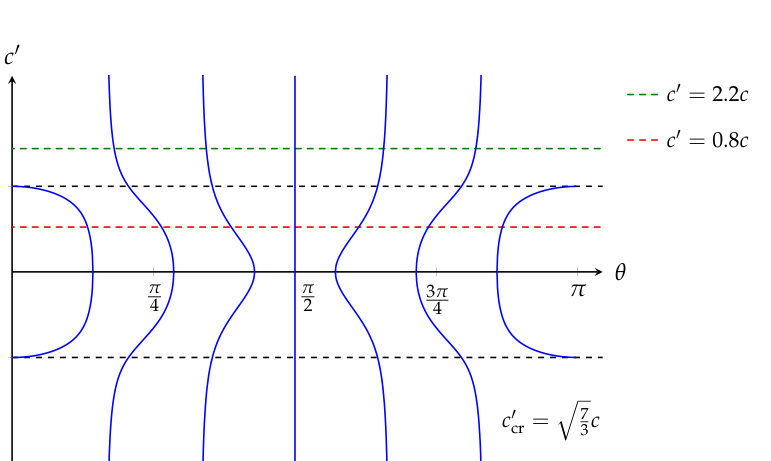
<figcaption class="paper-figure-caption"><b>Fig 5.</b> Figure 6: Plot of the left hand side of (3.75) for m = 7 and representative c′ values. The vertical line at θ = π</figcaption>
</figure>
</div>

<p><strong>Summary.</strong> This work theoretically investigates the thermodynamics and phase transitions in magnetic chains built from multi-atom molecules. Using mean-field theory, the authors map out a complex phase diagram featuring multiple ferromagnetic transitions. The analysis also details the emergence of boundary states due to impurities, providing deep insights into the stability of magnetic order.</p>
<p><strong>Why it may be interesting.</strong> The study of phase transitions, critical phenomena, and the emergence of boundary modes in interacting quantum spin systems is fundamental to understanding magnetic materials and quantum many-body physics.</p>
<details>
<summary>Detailed structure</summary>
<p><strong>Main problem.</strong> The paper derives the thermodynamics and analyzes the rich phase structure of magnetic chains composed of molecules with an arbitrary number of interacting magnetic atoms.</p>
<p><strong>Main result.</strong> The system exhibits a cascade of ferromagnetic phase transitions, and boundary states can emerge in the presence of impurities, characterized by critical temperatures.</p>
<p><strong>Method.</strong> The analysis employs the mean-field approach, utilizing the saddle point method to evaluate the partition function and determine equilibrium free energy and stability conditions.</p>
<p><strong>Model / system.</strong> The model consists of magnets built from molecules of $m$ magnetically active atoms in a chain, governed by an SU(N) invariant Hamiltonian with nearest-neighbor couplings.</p>
<p><strong>Key observables.</strong> Order parameters ($x_s$), free energy ($F$), and critical temperatures ($T_k, T_B$).</p>
<p><strong>Important parameters / regimes.</strong> Coupling constants ($C_{st}$), temperature ($T$), and the number of atoms in the molecule ($m$).</p>
<p><strong>Assumptions / limitations.</strong> The derivation of the equilibrium free energy relies on the mean-field approximation and the saddle point method; stability analysis is performed on the off-equilibrium free energy.</p>
<p><strong>Figures summary.</strong> Not specified.</p>
<p><strong>Paper structure.</strong> The paper progresses from the general SU(N) ferromagnet Hamiltonian to the mean-field free energy, establishing equilibrium conditions, and then analyzing the stability and emergence of boundary states in the discrete chain model.</p>
</details>
<details>
<summary>Abstract</summary>
<p>We study magnets composed of molecules with an arbitrary number $m$ of magnetically active atoms in a chain configuration interacting with nearest-neighbor couplings. We derive the thermodynamics of a chain of spin-$j$ $SU(2)$ magnetic atoms using a mean-field approach and determine the equilibrium states and stability conditions. The system exhibits a rich phase structure with a cascade of ferromagnetic phase transitions, their number ranging from $m$, for maximal ferromagnets, to zero, for paramagnets, depending on the relative strengths of the couplings. In the presence of impurities (modified couplings) at the ends of the chain, boundary states emerge that coexist with the paramagnetic phase or the fully ferromagnetic phase. For long chains, a continuum approximation can be taken that clarifies the structure of the phases. In the continuum description, magnetized states at temperatures lower than the critical temperature at which they appear correspond to kink solitons.</p>
</details>
<p><sub><a href="#top">↑ back to top</a></sub></p>

<p><a id="paper-2610.11042"></a></p>
<h3 id="a-general-framework-for-crystallization-in-maximal-hard-core-models"><a href="http://arxiv.org/abs/2610.11042v1">A general framework for crystallization in maximal hard-core models</a></h3>
<p><strong>Authors:</strong> Alexander Barg, Qidong He, Geyang Wang<br>
<strong>Type:</strong> theory · <strong>Category:</strong> statistical mechanics · <strong>PDF:</strong> <a href="https://arxiv.org/pdf/2610.11042v1">https://arxiv.org/pdf/2610.11042v1</a><br>
<strong>Analysis basis:</strong> full PDF text, analyzed in chunks
<strong>Topic relevance:</strong> <code>Keldysh / 2PI / non-Gaussian methods</code> <strong>1/5</strong> · <code>analog quantum simulation</code> <strong>1/5</strong></p>
<div class="figure-strip-hint">↔ Scroll figures horizontally</div>
<div class="paper-figures-scroll">
<figure class="paper-figure-card">
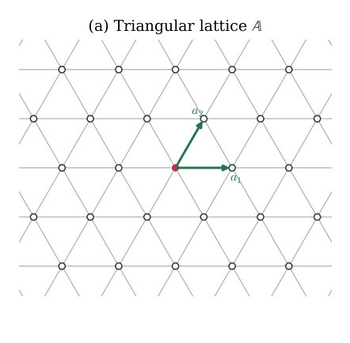
<figcaption class="paper-figure-caption"><b>Fig 1.</b> Figure 1. The triangular and honeycomb lattices in the coordinate realizations above. Left: A2 is generated by a1 = (1, 0) and a2 = (1/2, √</figcaption>
</figure>
<figure class="paper-figure-card">
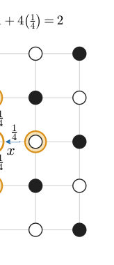
<figcaption class="paper-figure-caption"><b>Fig 2.</b> Figure 2. Occupied vertices are black and vacant vertices are white. The particle x keeps the unit at its own site and receives a share 1/4 from each highlighted neighbor, because each such neighbor has four occupied neighbors.</figcaption>
</figure>
<figure class="paper-figure-card">
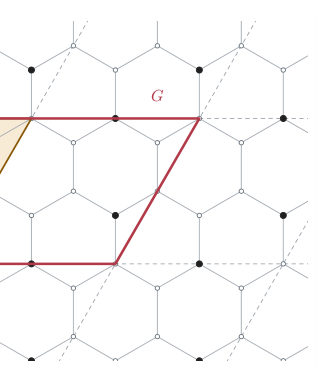
<figcaption class="paper-figure-caption"><b>Fig 3.</b> Figure 3. Supercells and fundamental parallelepipeds on the honeycomb lattice H2, in the coordi- nates of Figure 1. The configuration is invariant under the sublattice K generated by 2b1 and 2b2, which has index 4 in L. The shaded parallelogram G0 spanned by 2b1 and 2b2 is a fundamental parallelepiped of K, and the dashed lines show its translates T G0 under the grid LG0 = K. The parallelogram G spanned by 4b1 and 2b2 is another supercell of K: its grid LG has index 2 in K, so G has twice the minimum volume.</figcaption>
</figure>
<figure class="paper-figure-card">
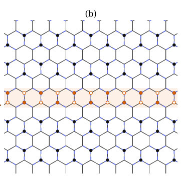
<figcaption class="paper-figure-caption"><b>Fig 4.</b> Figure 4. The sliding line. Both panels are perfect configurations of H2 at low activity: The panels differ in the position of the shaded line alone, which (b) slides by b1. Any set of lines may be slid in this way; sliding one line in every ℓgives a periodic configuration of period 2ℓb2.</figcaption>
</figure>
<figure class="paper-figure-card">
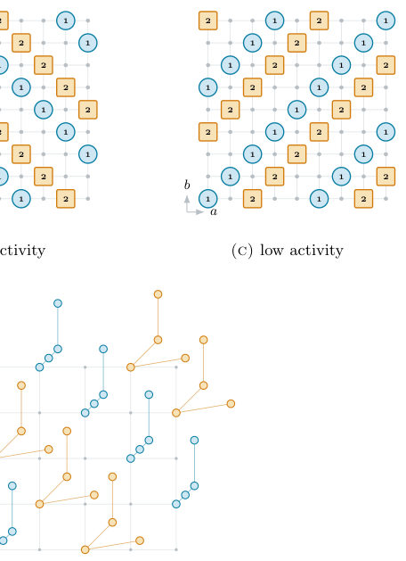
<figcaption class="paper-figure-caption"><b>Fig 5.</b> Figure 6. The perfect configurations of the two-tile model on G. A circle labeled 1 marks a site carrying T1, a square labeled 2 marks a site carrying T2, and a gray dot marks a vacant site. (a): at high activity every site is occupied and the type alternates from row to row; the second phase is the translate of this one by (0, 1). (b), (c): at low activity the occupied sites carry the two orientations of the perfect code of eG; the remaining eight phases are translates of these two. (d), (e): a window of the phases in (a) and (b) drawn with the actual tiles, the segments joining the four disks of a tile being guides only.</figcaption>
</figure>
</div>

<p><strong>Summary.</strong> This paper introduces a general mathematical framework to analyze phase transitions and crystallization in maximal hard-core lattice models. By developing a concept of 'volume allocation,' the authors successfully extend the applicability of the powerful Pirogov-Sinai theory to regimes previously inaccessible, proving crystallization for various lattice types. This provides a powerful theoretical tool for understanding ordered phases in constrained physical systems.</p>
<p><strong>Why it may be interesting.</strong> While focused on classical statistical mechanics, the rigorous mathematical machinery involving volume allocation and phase transition theory (Pirogov-Sinai) is highly relevant for understanding phase transitions in quantum many-body systems, especially those involving geometric constraints or local interactions.</p>
<details>
<summary>Detailed structure</summary>
<p><strong>Main problem.</strong> Developing a general mathematical framework to study phase coexistence and prove crystallization in maximal hard-core lattice models, especially in regimes where standard methods fail.</p>
<p><strong>Main result.</strong> The authors establish a unified set of assumptions, based on volume allocation, that allow the application of Pirogov-Sinai theory to prove crystallization for maximal hard-core models at both high and low activity levels.</p>
<p><strong>Method.</strong> The methodology heavily relies on adapting the concept of volume allocation (from Zahradn´ık's contour formalism) to the constraints of maximal configurations, leading to necessary conditions for the Peierls argument.</p>
<p><strong>Model / system.</strong> The system is a maximal hard-core model defined on periodic lattice-type graphs (e.g., $\mathbb{Z}^d$, triangular, honeycomb). The model is governed by a Hamiltonian involving chemical potentials ($\mu_x$) associated with placed tiles.</p>
<p><strong>Key observables.</strong> Phase coexistence, crystallization, allocated volume $v(x | X)$, and the existence of perfect configurations.</p>
<p><strong>Important parameters / regimes.</strong> Activity/Chemical Potentials ($\mu_x$), inverse temperature ($eta$), and the dimensionality/lattice structure ($d$).</p>
<p><strong>Assumptions / limitations.</strong> The framework requires assuming the existence of a volume allocation satisfying specific local and global optimization conditions (Assumptions 1 and 2) to apply Pirogov-Sinai theory.</p>
<p><strong>Figures summary.</strong> Figures illustrate the coordinate realizations of lattices ($A_2, H_2$), the discrete volume allocation on $\mathbb{Z}^2$, and the concept of supercells on the honeycomb lattice.</p>
<p><strong>Paper structure.</strong> The paper builds from defining the general maximal hard-core model, introducing the volume allocation concept, proving key lemmas relating perfect configurations to periodic ground states, and finally applying these results to prove crystallization in various lattice settings.</p>
</details>
<details>
<summary>Abstract</summary>
<p>We study general maximal hard-core models on periodic lattice-type graphs. While for standard models, phase coexistence may arise for high activity, for maximal models this behavior may occur also for sufficiently low activity values. Relying on the concept of volume allocation, we develop a {\em unified set of assumptions} that imply the Peierls condition, a convergent cluster expansion for the partition function, and hence the conclusions of Pirogov-Sinai theory for this class of models. We further check these assumptions for a number of examples including standard lattice-type periodic graphs, proving crystallization for both high and low activity. We also derive estimates for the values of activity that bound the phase coexistence regions in the phase diagram, rewriting for this purpose the proof of a technical result in the derivation of Pirogov-Sinai theory.</p>
</details>
<p><sub><a href="#top">↑ back to top</a></sub></p>

<p><a id="paper-2610.12283"></a></p>
<h3 id="theory-of-the-chmath806math-defect-in-mosmath807math-confirming-the-origin-of-the-quantum-emission"><a href="http://arxiv.org/abs/2610.12283v1">Theory of the CH$_\text{S}^-$ Defect in MoS$_2$ Confirming the Origin of the Quantum Emission</a></h3>
<p><strong>Authors:</strong> Chanaprom Cholsuk, Tobias Vogl<br>
<strong>Type:</strong> theory · <strong>Category:</strong> other · <strong>PDF:</strong> <a href="https://arxiv.org/pdf/2610.12283v1">https://arxiv.org/pdf/2610.12283v1</a><br>
<strong>Analysis basis:</strong> full PDF text, analyzed in chunks
<strong>Topic relevance:</strong> <code>correlated / nonlocal dissipation</code> <strong>1/5</strong> · <code>interference shaping light</code> <strong>1/5</strong></p>
<div class="figure-strip-hint">↔ Scroll figures horizontally</div>
<div class="paper-figures-scroll">
<figure class="paper-figure-card">
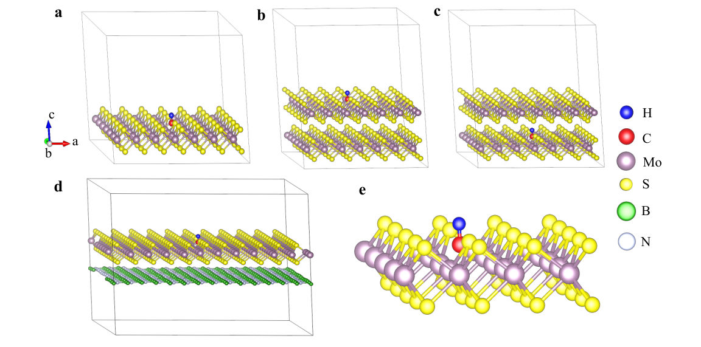
<figcaption class="paper-figure-caption"><b>Fig 1.</b> Figure 1. Optimized geometries of CH− S in each system. a MoS2 monolayer; b MoS2 bilayer with CH− S at the top layer; c MoS2 bilayer with CH− S at the middle layer; d MoS2/hBN heterostructure; and e Zoom-in CH− S defect on the MoS2 layer.</figcaption>
</figure>
<figure class="paper-figure-card">
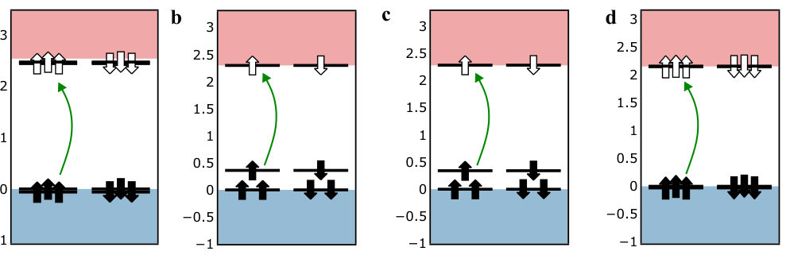
<figcaption class="paper-figure-caption"><b>Fig 2.</b> Figure 2. Kohn–Sham electronic transitions at the Γ point for CH− S in MoS2. a Monolayer MoS2. b Bilayer MoS2 with CH− S at the outer/top S site. c Bilayer MoS2 with CH− S at the inner/middle S site. d Heterostructure MoS2/hBN with CH− S . Filled and unfilled arrows denote occupied and unoccupied Kohn–Sham states, respectively, while upward and downward arrows indicate spin-up and spin-down channels. The green arrow marks the electronic transition used to calculate the optical properties.</figcaption>
</figure>
<figure class="paper-figure-card">
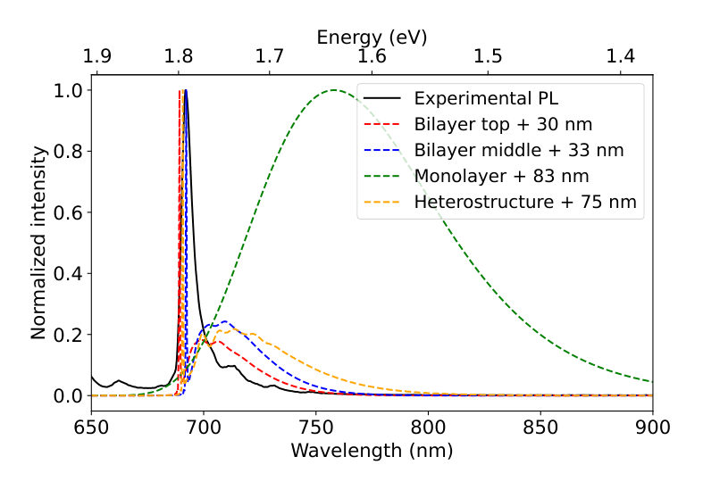
<figcaption class="paper-figure-caption"><b>Fig 3.</b> Figure 3. Comparison of the calculated and experimental PL spectra of CH− S . Calculated spectra are shown for CH− S in monolayer MoS2, the top- and middle-bilayer configurations, and the MoS2/hBN heterostructure, together with the experimental spectrum. The spectra are normalized to their respective maximum intensities, and the calculated ZPL positions are aligned with the experimental emission peak to compare the PL lineshapes and relative PSB contributions independently of the absolute transition energies. Experimental data is adapted with permission from Ref. [30].</figcaption>
</figure>
<figure class="paper-figure-card">
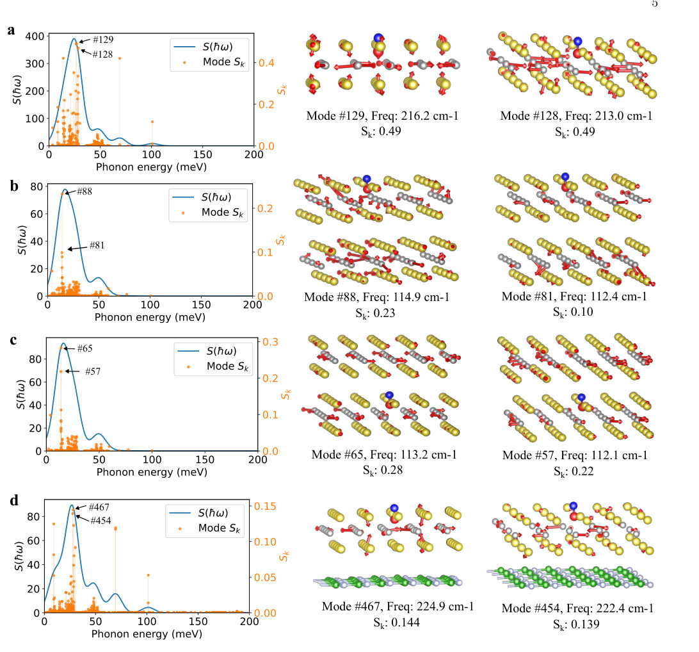
<figcaption class="paper-figure-caption"><b>Fig 4.</b> Figure 4. Simulated phonon spectral density of CH− S and the most two dominant phonon modes. a Monolayer MoS2. b,c Bilayer MoS2 with CH− S at the outer/top S site and inner/middle S site, respectively. d MoS2/hBN heterostructure with CH− S defect on the MoS2 layer. The red arrow represents the vibrational direction.</figcaption>
</figure>
</div>

<p><strong>Summary.</strong> This theoretical study investigates the quantum emission from a $  ext{CH}^-   ext{S}$ defect in $ ext{MoS}_2$ using advanced DFT and PL simulation techniques. By comparing predictions across different host environments (monolayer, bilayer, heterostructure), the authors establish that the $    ext{MoS}_2/ ext{hBN}$ interface best reproduces the experimental photoluminescence spectrum. This work clarifies the role of adjacent layers in determining the optical properties of 2D quantum emitters.</p>
<p><strong>Why it may be interesting.</strong> This work directly tackles the quantum optics of solid-state emitters, providing detailed vibronic coupling analysis (Huang-Rhys factors, phonon modes) crucial for understanding energy relaxation in nanoscale quantum systems.</p>
<details>
<summary>Detailed structure</summary>
<p><strong>Main problem.</strong> The paper addresses the challenge of theoretically establishing the microscopic origin of localized quantum emission from the $   ext{CH}^-   ext{S}$ defect in $ ext{MoS}_2$ and related 2D materials.</p>
<p><strong>Main result.</strong> The $  ext{MoS}_2/ ext{hBN}$ heterostructure model provides the first theoretical agreement by yielding a weak phonon sideband and closely reproducing the experimental photoluminescence lineshape.</p>
<p><strong>Method.</strong> The study employs first-principles calculations (DFT/HSE06) combined with advanced methods to simulate photoluminescence (PL) spectra using the full-phonon generating-function approach.</p>
<p><strong>Model / system.</strong> The physical system is the $    ext{CH}^-   ext{S}$ defect embedded in various environments: monolayer $    ext{MoS}_2$, bilayer $  ext{MoS}_2$, and the $  ext{MoS}_2/ ext{hBN}$ heterostructure.</p>
<p><strong>Key observables.</strong> Zero-Phonon Line (ZPL) energy, PL spectral lineshape, phonon sideband intensity, radiative lifetime, and transition-dipole orientation.</p>
<p><strong>Important parameters / regimes.</strong> The dependence of electronic and vibronic properties on the surrounding layers (e.g., the presence of hBN vs. isolated monolayer).</p>
<p><strong>Assumptions / limitations.</strong> The isolated-monolayer model is disfavored due to an inconsistent, overly broad phonon sideband; the $   ext{MoS}_2/ ext{hBN}$ model is deemed most physically relevant.</p>
<p><strong>Figures summary.</strong> Figures compare calculated PL spectra for four different defect environments against experimental data, and show simulated phonon spectral densities for these systems.</p>
<p><strong>Paper structure.</strong> The paper systematically compares four structural environments ($  ext{CH}^-   ext{S}$ in monolayer, bilayer, and heterostructure) by calculating structural parameters, electronic transitions, and full PL spectra to pinpoint the most accurate physical model.</p>
</details>
<details>
<summary>Abstract</summary>
<p>Establishing the microscopic origin of localized emission in two-dimensional materials through consistent agreement between experiment and theory remains challenging. Recent STM/STS-STML measurements assigned an emission near 1.8 eV in monolayer MoS$_2$/hBN(2L)/graphene to the negatively charged CH$_\mathrm{S}^{-}$ defect. However, a comprehensive theoretical description of this emitter is still lacking. Here, we develop such a description and systematically investigate the photophysical properties of CH$_\mathrm{S}^{-}$ in monolayer MoS$_2$, two bilayer configurations, and a MoS$_2$/hBN heterostructure. The defect retains a similar local geometry and favors a singlet ground state in all four environments, whereas its electronic transition, zero-phonon line, electron-phonon coupling, radiative lifetime, and transition-dipole orientation depend strongly on the surrounding layers. The isolated-monolayer model exhibits substantial structural reorganization and produces a broad, dominant phonon sideband that is inconsistent with experiment. Adding an adjacent layer, either MoS$_2$ or hBN, substantially suppresses the phonon sideband, with only a minor dependence on the defect position in bilayer MoS$_2$. In particular, the MoS$_2$/hBN model yields a weak phonon sideband and closely reproduces the experimental photoluminescence lineshape. Our results thus provide the first theoretical agreement of CH$_\mathrm{S}^{-}$ emission and further reveal the role of adjacent layers in determining the electronic, vibronic, and optical properties of the quantum emitters in two-dimensional materials.</p>
</details>
<p><sub><a href="#top">↑ back to top</a></sub></p>

<p><a id="paper-2610.11297"></a></p>
<h3 id="displacement-field-induced-ionization-of-defect-states-in-high-quality-hbn"><a href="http://arxiv.org/abs/2610.11297v1">Displacement-Field-Induced Ionization of Defect States in High-Quality hBN</a></h3>
<p><strong>Authors:</strong> Ilia Begichev, Daria Belotcerkovtceva, Iakov Reznikov, Sergey Slizovsky, Weijie Lu, Nansi Zhou, Ian Babich, Makars Siskins, Kostya S. Novoselov, Vladimir I. Falko, Kenji Watanabe, Takashi Taniguchi, Alexey I. Berdyugin<br>
<strong>Type:</strong> both · <strong>Category:</strong> disordered systems and neural networks · <strong>PDF:</strong> <a href="https://arxiv.org/pdf/2610.11297v1">https://arxiv.org/pdf/2610.11297v1</a><br>
<strong>Analysis basis:</strong> full PDF text, analyzed in chunks
<strong>Topic relevance:</strong> <code>quantum measurements</code> <strong>1/5</strong></p>
<div class="figure-strip-hint">↔ Scroll figures horizontally</div>
<div class="paper-figures-scroll">
<figure class="paper-figure-card">
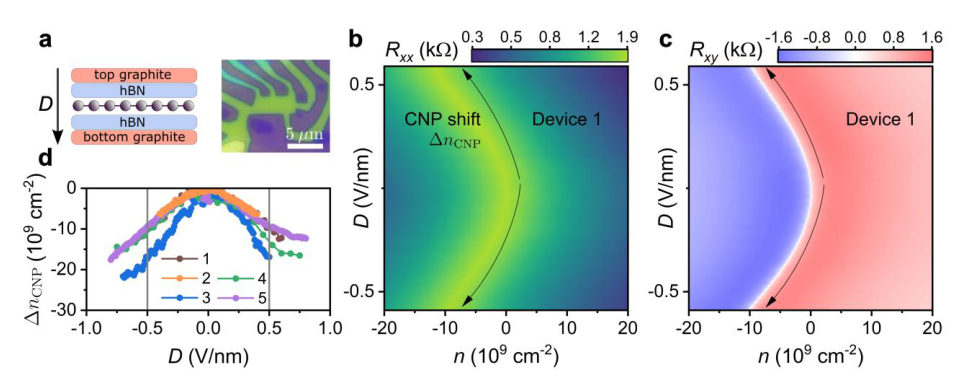
<figcaption class="paper-figure-caption"><b>Fig 1.</b> Figure 1. Displacement-field-induced charge transfer between graphene and hBN. a, Left: Schematic image of a double-graphite- gated device with monolayer graphene under an applied out-of-plane displacement field 𝐷. Right: Optical image of device 1. Scale bar, 5 𝜇m. b, c, Longitudinal 𝑅xx and Hall 𝑅xy resistance maps as a function of carrier density 𝑛 and displacement field 𝐷 at 𝑇= 100K for device 1. Black arrows highlight the shift of graphene CNP as a function of 𝐷. d, Сomparison of CNP shift as a function of 𝐷 for devices 1-5. Grey lines indicate 𝐷= ±0.5 V/nm, chosen for further comparison of Δ𝑛CNP.</figcaption>
</figure>
<figure class="paper-figure-card">
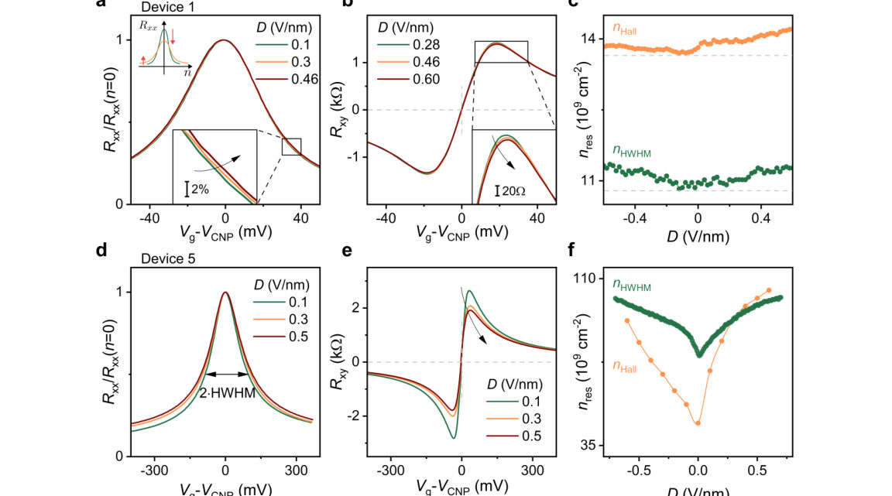
<figcaption class="paper-figure-caption"><b>Fig 2.</b> Figure 2. Change of graphene inhomogeneity under displacement field. a,b, Longitudinal 𝑅xx and Hall 𝑅xy resistances versus gate-voltage with respect to the Dirac point 𝑉g −𝑉CNP for representative values of 𝐷, measured in device 1 at 𝐵= 0 and 30 mT, respectively. Insets highlight the progressive broadening of the normalized 𝑅xx and suppression of 𝑅xy peaks under applied 𝐷. The schematic in (a) illustrates the evolution of 𝑅xx(𝑉𝑔): increasing 𝐷 suppresses the peak while increasing the HWHM. c, The</figcaption>
</figure>
<figure class="paper-figure-card">
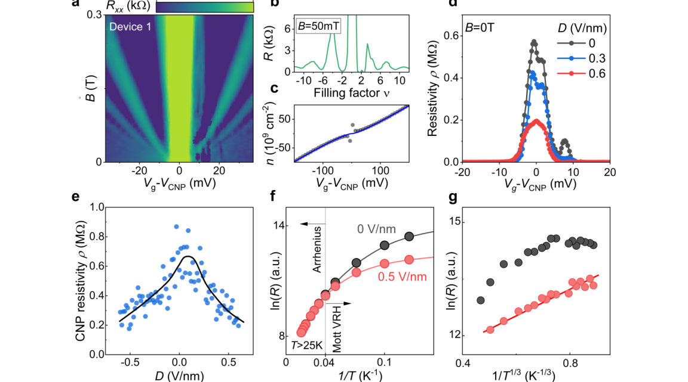
<figcaption class="paper-figure-caption"><b>Fig 3.</b> Figure 3. Transport in the gapped regime under a displacement field. a, Longitudinal 𝑅xx versus gate-voltage with respect to the Dirac point 𝑉g −𝑉g0 and magnetic field 𝐵 at 𝐷= 0.2 V/nm. The low-𝐵 parabolic Landau fans arise from quantum-capacitance effects. b, 𝑅xx at 50 mT versus filling factor 𝜈 obtained from the non-linear gate calibration (see SI) c, Non-linear calibration 𝑛 as a function of 𝑉g −𝑉CNP at 100 K: grey points are obtained from the Hall measurements at 100 mT, and the blue line is a fit which accounts for quantum capacitance. d, Resistivity at 𝐵= 0 for different 𝐷. e, Maximum CNP resistivity versus 𝐷; black line is a</figcaption>
</figure>
<figure class="paper-figure-card">
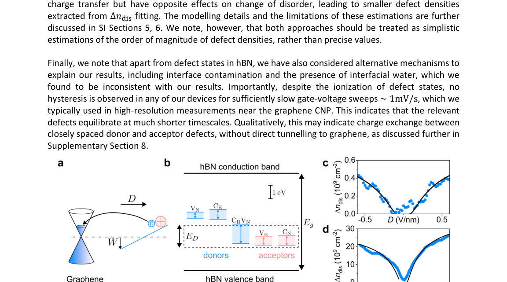
<figcaption class="paper-figure-caption"><b>Fig 4.</b> Figure 4. Ionization of defects in hBN. a, Schematic illustration of the spatial variation of defect energy levels under an applied displacement field relative to graphene CNP. At 𝐷= 0, donor states lie below the graphene CNP and therefore remain charge neutral. Applying 𝐷 bends the hBN bands, shifting these in-gap states above the graphene CNP, which leads to their ionization and to electron doping of graphene. b, Summary of the literature discussed in the main text. The energy diagram shows the reported position of the graphene CNP within the hBN bandgap55–57, the range of reported acceptor-state energies31–33 marked in red, and the range of donor-state energies24,31–33 marked in blue....</figcaption>
</figure>
</div>

<p><strong>Summary.</strong> This research demonstrates that even high-quality hBN substrates contain defect states that are sensitive to external electric fields. By measuring transport properties in graphene/hBN heterostructures, the authors show that an applied displacement field causes these defects to ionize, leading to measurable doping and increased disorder in the graphene. This finding has direct implications for interpreting and designing next-generation vdW electronic devices.</p>
<p><strong>Why it may be interesting.</strong> This work provides a concrete example of how subtle material defects in insulating substrates can act as active charge sources, modifying the electronic response of quantum devices, which is crucial for designing reliable 2D material heterostructures.</p>
<details>
<summary>Detailed structure</summary>
<p><strong>Main problem.</strong> The study investigates how defect states within the surrounding hexagonal boron nitride (hBN) substrate respond to an applied out-of-plane displacement field, which can alter the electronic properties of encapsulated 2D materials.</p>
<p><strong>Main result.</strong> The applied displacement field induces significant charge transfer via the ionization of defect states in hBN, leading to measurable electron doping and increased carrier-density inhomogeneity in the graphene layer.</p>
<p><strong>Method.</strong> The authors combine transport measurements (measuring resistance maps) with theoretical modeling (using Coulomb potential calculations and puddle potential models) to quantify the charge transfer.</p>
<p><strong>Model / system.</strong> The physical system is monolayer graphene encapsulated between high-quality hBN crystals, forming a van der Waals heterostructure. The analysis models the effect of charged defects (donor/acceptor states) in the hBN bandgap on the graphene's electronic structure.</p>
<p><strong>Key observables.</strong> Shift of the graphene Charge Neutrality Point (CNP), change in residual carrier density ($\Delta n_{res}$), and device inhomogeneity quantified by $n_{HWHM}$ and $n_{Hall}$.</p>
<p><strong>Important parameters / regimes.</strong> Displacement field ($D$), temperature ($T$), and defect concentrations ($\sim 1-7	imes 10^{-5} 	ext{ nm}^{-3}$).</p>
<p><strong>Assumptions / limitations.</strong> The analysis assumes that the observed changes are dominated by defect ionization rather than interfacial contamination (e.g., water or VOCs), and uses various models (step-like vs. Gaussian) to relate measured inhomogeneity to potential fluctuations.</p>
<p><strong>Figures summary.</strong> Figures show $R_{xx}$ and $R_{xy}$ maps demonstrating CNP shifts and inhomogeneity changes as a function of $D$. Other figures plot $n_{HWHM}$ and $n_{Hall}$ vs. $D$, illustrating the device-dependent response to the field.</p>
<p><strong>Paper structure.</strong> The paper progresses by first establishing the experimental observation of field-induced changes in graphene transport (disorder increase). It then systematically rules out extrinsic sources (water, VOCs) before attributing the effect to intrinsic defect ionization in hBN, culminating in theoretical modeling linking measured disorder to defect density.</p>
</details>
<details>
<summary>Abstract</summary>
<p>Encapsulation of two-dimensional (2D) materials with hexagonal boron nitride (hBN) is widely used to fabricate ultraclean van der Waals (vdW) heterostructures for optoelectronic and quantum transport studies. These devices are often operated under strong out-of-plane displacement fields that tune the electronic properties of the active 2D material, while the surrounding hBN is typically assumed to remain electronically inert. This assumption, however, neglects defect states that are present even in high-quality hBN crystals. Here, we probe their response to the applied displacement field using monolayer graphene encapsulated between hBN crystals as a sensitive charge sensor. Increasing the displacement field induces notable charge transfer between graphene and hBN, producing additional electron doping of 10-20x10^9 cm^(-2) even at the moderate displacement field (~0.5 V nm^(-1)), while simultaneously increasing carrier-density inhomogeneity of the graphene layer. Both effects are consistent with ionization of defect states within the hBN bandgap, with the bulk density ~1-7x10^(-5) nm^(-3) varying across different hBN crystals. Our results show that displacement-field-induced defect ionization in hBN can modify the electronic response of vdW heterostructures, with direct implications for device design and interpretation of experiments.</p>
</details>
<p><sub><a href="#top">↑ back to top</a></sub></p>

<p><a id="paper-2610.12365"></a></p>
<h3 id="energy-constrained-two-way-capacities-of-the-pure-loss-channel"><a href="http://arxiv.org/abs/2610.12365v1">Energy-constrained two-way capacities of the pure-loss channel</a></h3>
<p><strong>Authors:</strong> Alessandro Falco, Francesco Anna Mele, Ludovico Lami, Vittorio Giovannetti<br>
<strong>Type:</strong> theory · <strong>Category:</strong> quantum information and computing · <strong>PDF:</strong> <a href="https://arxiv.org/pdf/2610.12365v1">https://arxiv.org/pdf/2610.12365v1</a><br>
<strong>Analysis basis:</strong> full PDF text, analyzed in chunks
<strong>Topic relevance:</strong> <code>correlated / nonlocal dissipation</code> <strong>1/5</strong></p>
<div class="figure-strip-hint">↔ Scroll figures horizontally</div>
<div class="paper-figures-scroll">
<figure class="paper-figure-card">
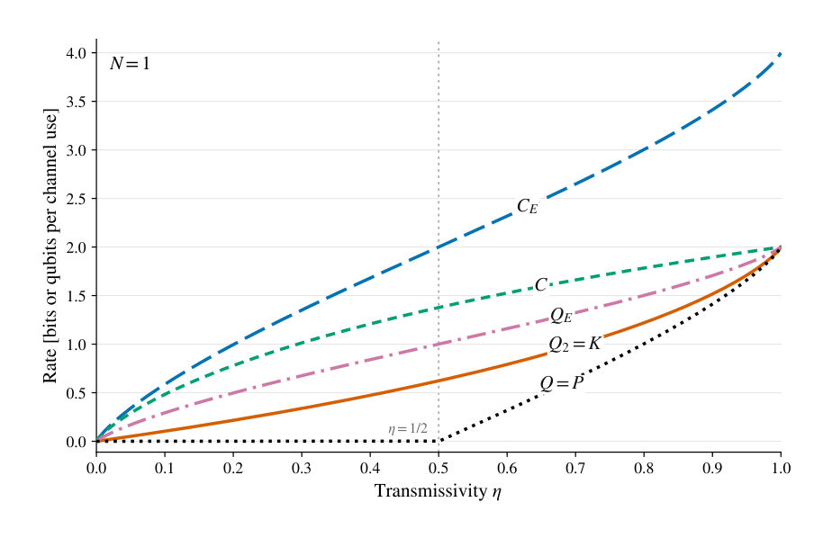
<figcaption class="paper-figure-caption"><b>Fig 1.</b> Figure 1: Capacities of the single-mode pure-loss channel as functions of transmissivity η, for an average input photon budget N = 1. All rates are asymptotic, with error tending to zero. The two-way quantum and secret-key capacities are Q2 = K = g(N) −g((1 −η)N) (solid), by Theorem 1.1. The unassisted classical capacity is C = g(ηN) (short-dashed) [GGL+04]. With unlimited preshared entanglement, the classical capacity is CE = g(N) + g(ηN) −g((1 −η)N) (long-dashed) [GLMS03], and the quantum capacity is QE = CE/2 (dash-dotted) [BSST02]. The unassisted quantum and private classical capacities are Q = P = max{0, g(ηN) −g((1 −η)N)} (dotted) [WHG12, WQ18]. The vertical guide marks η = 1/2; Q = P...</figcaption>
</figure>
</div>

<p><strong>Summary.</strong> This paper calculates the ultimate communication limits (quantum and secret-key capacities) for the pure-loss quantum channel under an average energy constraint. The main result shows these capacities are determined by a simple function of the input photon budget and channel transmissivity. This completes the theoretical understanding of bosonic quantum communication under pure loss.</p>
<p><strong>Why it may be interesting.</strong> This work provides a precise, closed-form capacity formula for a fundamental channel (pure loss) in quantum communication, which is crucial for understanding realistic quantum networking protocols.</p>
<details>
<summary>Detailed structure</summary>
<p><strong>Main problem.</strong> The paper determines the two-way quantum and secret-key capacities for the pure-loss quantum channel when an average input photon-number constraint is imposed.</p>
<p><strong>Main result.</strong> Both capacities are found to be equal to the expression g(N) - g((1 - \eta)N), where g is the entropy of a thermal state, completing the capacity picture for this channel.</p>
<p><strong>Method.</strong> The proof establishes the converse bounds using techniques involving regularized relative entropy of entanglement and analyzing the energy budget over multiple channel uses.</p>
<p><strong>Model / system.</strong> The system analyzed is the single-mode pure-loss channel $L_\eta$ with transmissivity $\eta$, which models photon loss by mixing the input with a vacuum environment.</p>
<p><strong>Key observables.</strong> Two-way quantum capacity ($Q_2$), secret-key capacity ($K$), and the regularized relative entropy of entanglement ($\mathbb{E}_\infty^R$).</p>
<p><strong>Important parameters / regimes.</strong> Transmissivity ($\eta$), average input photon budget ($N$), and the error parameter ($\epsilon$).</p>
<p><strong>Assumptions / limitations.</strong> The analysis relies on the energy-constrained, two-way-assisted communication model and uses techniques like monotone convergence to extend results from finite to infinite dimensions.</p>
<p><strong>Figures summary.</strong> Figure 1 compares various capacities (e.g., $Q_2=K$, unassisted classical capacity $C$) as functions of $\eta$ for a fixed input budget $N=1$.</p>
<p><strong>Paper structure.</strong> The paper first defines the problem and establishes the key capacity formulas. It then develops the necessary theoretical tools, including bounds on relative entropy, and finally proves the converse bounds for the finite-block and asymptotic regimes.</p>
</details>
<details>
<summary>Abstract</summary>
<p>We determine the two-way quantum and secret-key capacities of the pure-loss channel under an average input photon-number constraint. For transmissivity $η$ and photon budget $N$, both capacities equal $g(N)-g((1-η)N)$, where $g$ is the entropy of a thermal state. This coincides with the rate achieved by the known reverse coherent information of a two-mode squeezed vacuum. Our result provides the last missing capacity formula for the celebrated pure-loss channel, completing the picture of bosonic quantum communication under pure loss.</p>
</details>
<p><sub><a href="#top">↑ back to top</a></sub></p>

<p><a id="paper-2610.11372"></a></p>
<h3 id="heisenberg-echo-symmetrization-for-gate-insertion-error-mitigation"><a href="http://arxiv.org/abs/2610.11372v1">Heisenberg Echo Symmetrization for Gate-Insertion Error Mitigation</a></h3>
<p><strong>Authors:</strong> Raam Uzdin<br>
<strong>Type:</strong> theory · <strong>Category:</strong> quantum information and computing · <strong>PDF:</strong> <a href="https://arxiv.org/pdf/2610.11372v1">https://arxiv.org/pdf/2610.11372v1</a><br>
<strong>Analysis basis:</strong> full PDF text, analyzed in chunks
<strong>Topic relevance:</strong> <code>quantum measurements</code> <strong>1/5</strong></p>
<div class="figure-strip-hint">↔ Scroll figures horizontally</div>
<div class="paper-figures-scroll">
<figure class="paper-figure-card">
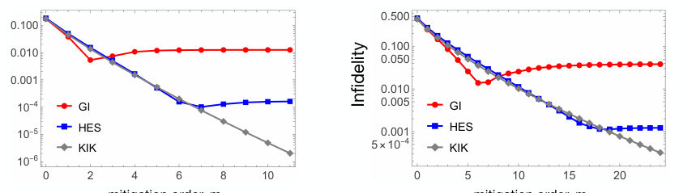
<figcaption class="paper-figure-caption"><b>Fig 1.</b> Figure 1. Mean infidelity as a function of the mitigation order m. The results were averaged over 50 random seven-qubit circuits of depth seven (see main text). The Heisenberg echo (HES-blue) outperforms the standard gate insertion (GI-red) protocol. In the weak noise case (a) the HES fidelity for large m is 80 times better than that of GI and in the strong noise case (b) the improvement factor is 30. As expected from theory, the pulse-inverse-based KIK method is more accurate than HES, but HES has the same implementation simplicity and universal compatibility as GI.</figcaption>
</figure>
</div>

<p><strong>Summary.</strong> This paper introduces Heisenberg-echo symmetrization (HES), an advanced quantum error mitigation technique designed to fix the fundamental flaw in standard Gate Insertion (GI) protocols. By incorporating a Heisenberg echo structure, HES cancels leading error terms arising from non-commuting gate noise. This results in substantial fidelity improvements while maintaining hardware compatibility, making it a powerful tool for near-term quantum devices.</p>
<p><strong>Why it may be interesting.</strong> It provides a hardware-agnostic, theoretically grounded improvement over existing quantum error mitigation techniques, which is crucial for scaling quantum computation.</p>
<details>
<summary>Detailed structure</summary>
<p><strong>Main problem.</strong> Gate insertion (GI) quantum error mitigation fails when the noise channel does not commute with the ideal gate, leading to noise distortion rather than simple noise amplification.</p>
<p><strong>Main result.</strong> Heisenberg-echo symmetrization (HES) significantly reduces the absolute fidelity error by one to two orders of magnitude compared to standard GI.</p>
<p><strong>Method.</strong> HES combines standard GI with an echo derived from the Heisenberg representation to analytically cancel the leading error term caused by non-commuting gate noise.</p>
<p><strong>Model / system.</strong> The analysis focuses on quantum computation involving noisy gates (e.g., CZ, CX) modeled using Liouville space operators and noise channels.</p>
<p><strong>Key observables.</strong> Absolute fidelity error, expectation values of observables $\langle A 
angle$, and variance $ ext{Var}(A)$.</p>
<p><strong>Important parameters / regimes.</strong> Mitigation order ($m$), noise strength ($\xi$), and the rank of the observable (HES is best for rank-one observables).</p>
<p><strong>Assumptions / limitations.</strong> HES is compatible with any hardware and requires only circuit-level access, although high-rank observables can increase echo variance.</p>
<p><strong>Figures summary.</strong> Figure 1 compares mean infidelity vs. mitigation order for GI, HES, and KIK across weak and strong noise regimes, showing HES's superior performance.</p>
<p><strong>Paper structure.</strong> The paper first establishes the failure of GI for non-commuting noise, then introduces HES as a correction mechanism by combining GI with a Heisenberg echo structure, and finally presents simulations comparing HES's error suppression against GI and KIK.</p>
</details>
<details>
<summary>Abstract</summary>
<p>Gate insertion (GI) quantum error mitigation replaces involutory gates such as CZ and CX with 2j+1 repetitions of the same gates to nominally amplify noise by the same factor. Analytical and experimental results show that this amplification scaling fails for non-commuting gate noise, as typically encountered in realistic devices. Here we introduce Heisenberg-echo symmetrization (HES), which combines standard GI with an echo inspired by the Heisenberg representation to cancel the leading GI error. In our simulations, HES reduces the absolute fidelity error by one to two orders of magnitude compared with GI. Unlike the more accurate Layered-KIK method, HES is compatible with any hardware and requires only circuit-level access. It enables virtual noise scaling across platforms, potentially reducing sampling overhead substantially. Its agnostic noise amplification also provides full resilience to temporal noise drift. For pure initial states, however, high-rank observables can substantially increase the echo variance relative to non-echoed circuits, whereas rank-one observables incur no additional sampling overhead compared with GI or Layered-KIK. HES is therefore particularly suited to rank-one or nearly rank-one observables.</p>
</details>
<p><sub><a href="#top">↑ back to top</a></sub></p>

<p><a id="paper-2610.11689"></a></p>
<h3 id="mode-selective-electron-phonon-coupling-drives-charge-density-waves-in-the-kagome-metals-yrumath848mathsimath849math-and-larumath850mathsimath851math"><a href="http://arxiv.org/abs/2610.11689v1">Mode-selective electron-phonon coupling drives charge density waves in the kagome metals YRu$_3$Si$_2$ and LaRu$_3$Si$_2$</a></h3>
<p><strong>Authors:</strong> Wenqian Tu, Run Lv, Dingfu Shao, Yuping Sun, Wenjian Lu<br>
<strong>Type:</strong> theory · <strong>Category:</strong> strongly correlated electrons · <strong>PDF:</strong> <a href="https://arxiv.org/pdf/2610.11689v1">https://arxiv.org/pdf/2610.11689v1</a><br>
<strong>Analysis basis:</strong> full PDF text, analyzed in chunks
<strong>Topic relevance:</strong> <code>Keldysh / 2PI / non-Gaussian methods</code> <strong>1/5</strong></p>
<div class="figure-strip-hint">↔ Scroll figures horizontally</div>
<div class="paper-figures-scroll">
<figure class="paper-figure-card">
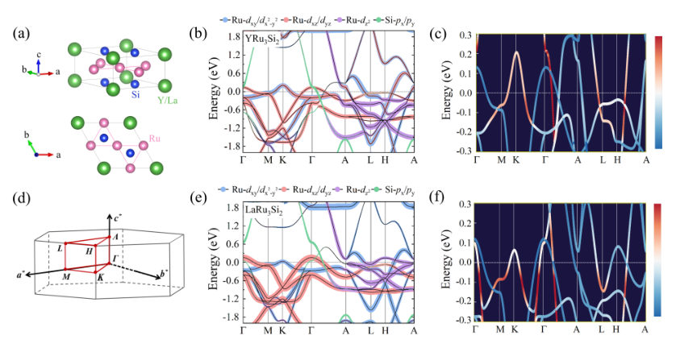
<figcaption class="paper-figure-caption"><b>Fig 1.</b> FIG. 1. (a) Side and top views of the YRu3Si2 and LaRu3Si2 crystal structures showing the kagome Ru layer (pink), Si layers (blue), and Y/La cations (green). (b) Orbital-projected band structure and (c) electron linewidth distribution of YRu3Si2. (d) Brillouin zone with high-symmetry points labeled. (e) Orbital-projected band structure and (f) electron linewidth distribution of LaRu3Si2.</figcaption>
</figure>
<figure class="paper-figure-card">
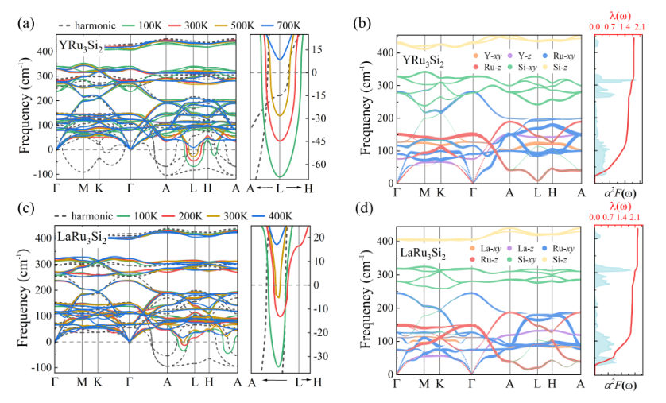
<figcaption class="paper-figure-caption"><b>Fig 2.</b> FIG. 2. (a) Harmonic phonon spectrum (dashed line) and temperature-dependent anharmonic phonon spectra (colored solid lines) for the high-temperature P6/mmm phase of YRu3Si2. (b) Phonon dispersion of YRu3Si2 at 700 K, color-weighted by the contributions from Y, Ru, and Si atomic vibrations. The Eliashberg spectral function α2F(ω) (blue) and the integrated EPC constant λ (red) are plotted on the right side. (c), (d) Same as (a), (b) for LaRu3Si2 at 400 K.</figcaption>
</figure>
<figure class="paper-figure-card">
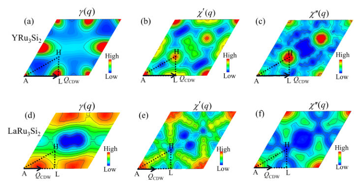
<figcaption class="paper-figure-caption"><b>Fig 3.</b> FIG. 3. (a) Phonon linewidth γ(q) of the lowest phonon mode for YRu3Si2. (b) Real part χ′(q) and (c) imaginary part χ′′(q) of the electronic susceptibility for YRu3Si2, where QCDW is indicated by a black arrow. (d)–(f) Corresponding results for LaRu3Si2. All panels display the quantities in the Qz = 1/2 plane.</figcaption>
</figure>
<figure class="paper-figure-card">

<figcaption class="paper-figure-caption"><b>Fig 4.</b> FIG. 4. MLFF-driven molecular dynamics simulations of the CDW melting process. (a) YRu3Si2 at 10 K, 400 K, and 800 K. (b) LaRu3Si2 at 10 K, 250 K, and 500 K. Black arrows indicate the Ru displacement directions relative to the high-symmetry positions, and pink lines mark the Ru-Ru bonds shortened by the CDW distortion, whose number progressively decreases with increasing temperature.</figcaption>
</figure>
<figure class="paper-figure-card">

<figcaption class="paper-figure-caption"><b>Fig 5.</b> FIG. 5. COHP analysis of the parent P6/mmm and CDW-distorted supercells. (a) YRu3Si2 parent, (b) YRu3Si2 CDW, (c) LaRu3Si2 parent, (d) LaRu3Si2 CDW. The curves show the COHP of the Ru-Ru, Y-Si (La-Si), and Ru-Si bonding pairs, and the numbers denote the corresponding ICOHP values.</figcaption>
</figure>
</div>

<p><strong>Summary.</strong> This work establishes a unified microscopic picture for CDW formation in kagome metals YRu3Si2 and LaRu3Si2. The research demonstrates that the CDW instability is driven by mode-selective electron-phonon coupling, not Fermi surface nesting. Furthermore, it explains the large difference in transition temperatures by linking it to enhanced lattice rigidity controlled by the A-site cation size.</p>
<p><strong>Why it may be interesting.</strong> The detailed coupling between lattice vibrations (phonons) and electronic degrees of freedom (electrons) to drive a collective electronic state (CDW) is a core topic in strongly correlated electron physics, relevant to understanding unconventional superconductivity.</p>
<details>
<summary>Detailed structure</summary>
<p><strong>Main problem.</strong> To resolve the microscopic mechanism driving the record-high Charge Density Wave (CDW) transition temperatures in kagome metals YRu3Si2 and LaRu3Si2.</p>
<p><strong>Main result.</strong> The CDW is driven by mode-selective electron-phonon coupling (EPC) involving Ru-d and Si-p orbitals, and the high transition temperature is enhanced by lattice rigidity stemming from the smaller Y3+ ion.</p>
<p><strong>Method.</strong> The study combines mode-resolved EPC analysis, anharmonic phonon calculations via Molecular Dynamics (MD) using MLFF, and electronic susceptibility analysis to rule out Fermi surface nesting.</p>
<p><strong>Model / system.</strong> The system consists of the kagome metals YRu3Si2 and LaRu3Si2, whose electronic and lattice dynamics are modeled using DFT and advanced simulation techniques.</p>
<p><strong>Key observables.</strong> Electron linewidth ($\Gamma_{nk}$), momentum-resolved phonon linewidth ($\gamma(\mathbf{q})$), electronic susceptibility ($\chi(\mathbf{q})$), and CDW formation energy ($\Delta E$).</p>
<p><strong>Important parameters / regimes.</strong> High CDW transition temperatures ($\approx 800$ K for YRu3Si2), specific CDW propagation vectors, and the ionic radius of the A-site cation (Y vs La).</p>
<p><strong>Assumptions / limitations.</strong> The analysis relies on the Migdal approximation for EPC and assumes that anharmonic phonon renormalization governs the CDW melting process.</p>
<p><strong>Figures summary.</strong> Figures show crystal structures, orbital-projected band structures, electron linewidth distributions, and phonon spectra comparing harmonic and anharmonic regimes.</p>
<p><strong>Paper structure.</strong> The paper progresses by first establishing the high-temperature CDW state, then using EPC analysis to pinpoint the coupling mechanism, ruling out alternative theories like FSN, and finally using MD simulations and bonding analysis to explain the temperature and material dependence of the CDW.</p>
</details>
<details>
<summary>Abstract</summary>
<p>YRu$_3$Si$_2$ and LaRu$_3$Si$_2$ host the highest charge density wave (CDW) transition temperatures ever reported in kagome metals, $T_{\mathrm{CDW}}\approx 800$ and 400~K, with propagation vectors $Q_{\mathrm{CDW}}\approx(1/2,0,0)$ and $(1/4,0,0)$, respectively. The microscopic mechanism behind these record values has remained unresolved. Here, we combine anharmonic phonon renormalization extracted from molecular dynamics driven by a machine-learned force field with mode-resolved electron-phonon coupling (EPC) analysis to identify this mechanism. The CDW is driven by mode-selective EPC: the Ru out-of-plane phonon modes couple the Ru-$d_{xz}/d_{yz}$ and Si-$p_x/p_y$ orbitals, and the phonon linewidth peaks sharply at $Q_{\mathrm{CDW}}$, while the featureless electronic susceptibility rules out Fermi-surface nesting. Phonon anharmonicity melts the CDW, and the anharmonic phonon spectra reproduce both $Q_{\mathrm{CDW}}$ and $T_{\mathrm{CDW}}$ in good agreement with experiments. Molecular dynamics simulations also visualize the CDW melting in real space. Chemical bonding analysis further shows that the smaller Y$^{3+}$ radius strengthens the Ru-Ru bonds, enhancing lattice rigidity and accounting for the factor-of-two higher $T_{\mathrm{CDW}}$ of YRu$_3$Si$_2$. Our results establish a unified microscopic picture of CDW formation and melting in kagome metals YRu$_3$Si$_2$ and LaRu$_3$Si$_2$.</p>
</details>
<p><sub><a href="#top">↑ back to top</a></sub></p>

<p><a id="paper-2610.11562"></a></p>
<h3 id="multipolar-fluctuations-in-localized-math877math-electron-systems-from-dynamical-mean-field-theory-application-to-math878math"><a href="http://arxiv.org/abs/2610.11562v1">Multipolar fluctuations in localized $4f^2$-electron systems from dynamical mean-field theory: application to $\mathrm{PrCdNi}_4$</a></h3>
<p><strong>Authors:</strong> Koki Numa, Junya Otsuki<br>
<strong>Type:</strong> theory · <strong>Category:</strong> strongly correlated electrons · <strong>PDF:</strong> <a href="https://arxiv.org/pdf/2610.11562v1">https://arxiv.org/pdf/2610.11562v1</a><br>
<strong>Analysis basis:</strong> full PDF text, analyzed in chunks
<strong>Topic relevance:</strong> <code>Keldysh / 2PI / non-Gaussian methods</code> <strong>1/5</strong></p>
<div class="figure-strip-hint">↔ Scroll figures horizontally</div>
<div class="paper-figures-scroll">
<figure class="paper-figure-card">

<figcaption class="paper-figure-caption"><b>Fig 1.</b> FIG. 1. CEF levels within the J = 4 manifold of the 4f 2 configuration obtained from (a) the Hamiltonian in the LS coupling ˆH(f2) CEF given by Eq. (1), (b) the many-body Hamiltonian H in the full l = 3 space including both the j = 5/2 and j = 7/2 orbitals formulated in Eqs. (3)–(6), (c) the effective j = 5/2 Hamiltonian H(5/2) eff introduced in Eqs. (8)–(12), retaining only the zeroth-order terms corresponding to the conventional j–j coupling, and (d) H(5/2) eff incorporating the first-order corrections in 1/λ. For (b)–(d), the Coulomb interaction parameters are taken as F 0 = 5.7 eV, F 2 = 10 eV, F 4 = 6.7 eV, and F 6 = 4.9 eV, with the spin-orbit coupling constant λ = 0.2 eV and the CEF...</figcaption>
</figure>
<figure class="paper-figure-card">

<figcaption class="paper-figure-caption"><b>Fig 2.</b> FIG. 2. (a) Crystal structure of PrCdNi4. (b) The CEF level scheme for the J = 4 manifold of the 4f 2 configuration derived from experiments [46, 49], corresponding to the parameters W = −3 K and X = 0.8 in Eq. (1). The crystal structure was drawn using VESTA [53].</figcaption>
</figure>
<figure class="paper-figure-card">

<figcaption class="paper-figure-caption"><b>Fig 3.</b> FIG. 3. (a) Fully relativistic band structure of PrCdNi4 cal- culated using the FPLO package. The black lines represent the DFT result and the blue dashed lines represent the tight- binding bands obtained from projective Wannier functions. (b) Density of states. The black and colored lines show the total and orbital-resolved contributions, respectively. (c) The high-symmetry points in the Brillouin zone. The red line in- dicates the path used in (a) and subsequent plots.</figcaption>
</figure>
<figure class="paper-figure-card">

<figcaption class="paper-figure-caption"><b>Fig 4.</b> FIG. 4. The CEF level scheme of the J = 4 manifold of the 4f 2 configuration obtained by fitting based on Sec. II. ∆Γ3−Γ4, ∆Γ3−Γ1 and ∆Γ3−Γ5 denote the energies of the Γ4, Γ1 and Γ5 states, respectively, relative to the Γ3 state.</figcaption>
</figure>
<figure class="paper-figure-card">

<figcaption class="paper-figure-caption"><b>Fig 5.</b> FIG. 5. (a) The single-particle excitation spectrum A(k, ω) and (b) the k-integrated spectrum A(ω) computed using the DFT+DMFT method.</figcaption>
</figure>
</div>

<p><strong>Summary.</strong> This theoretical work develops an advanced framework using DFT+DMFT to study multipolar fluctuations in $4f^2$ electron systems. By applying it to $\mathrm{PrCdNi}_4$, the authors predict a specific antiferroquadrupolar ordering state. The paper is significant for its rigorous methodology connecting multiple theoretical descriptions of strongly correlated rare-earth compounds.</p>
<p><strong>Why it may be interesting.</strong> The detailed treatment of multipolar fluctuations and the development of a rigorous mapping between single-particle and many-particle susceptibilities are highly relevant for understanding complex magnetic and electronic ordering in correlated materials.</p>
<details>
<summary>Detailed structure</summary>
<p><strong>Main problem.</strong> The paper extends the analysis of multipolar fluctuations from $4f^1$-electron systems to the more complex $4f^2$-electron systems.</p>
<p><strong>Main result.</strong> For $\mathrm{PrCdNi}_4$, the analysis predicts a $(3z^2 - r^2)$-type antiferroquadrupolar order at $oldsymbol{q}=(2\pi, \pi, 0)$ driven by the competition between nearest- and fourth-nearest-neighbor interactions.</p>
<p><strong>Method.</strong> The methodology combines Density Functional Theory with Dynamical Mean-Field Theory (DFT+DMFT) and involves constructing many-particle states within the $j-j$ coupling scheme.</p>
<p><strong>Model / system.</strong> The focus is on localized $4f^2$-electron systems, specifically applied to the material $\mathrm{PrCdNi}_4$, which has a non-Kramers $\Gamma_3$ doublet ground state.</p>
<p><strong>Key observables.</strong> Multipolar susceptibilities, Crystal Electric Field (CEF) energy levels, and the resulting order parameter (e.g., quadrupolar order).</p>
<p><strong>Important parameters / regimes.</strong> The analysis involves CEF parameters ($W, X$) and coupling constants, with the ground state exhibiting a $\Gamma_3$ doublet separated from the first excited state by $13.2 	ext{ K}$.</p>
<p><strong>Assumptions / limitations.</strong> The framework relies on developing effective Hamiltonians in the $j=5/2$ subspace and using perturbation theory to incorporate higher-energy states.</p>
<p><strong>Figures summary.</strong> Figures compare CEF energy levels calculated using different theoretical approaches (LS coupling vs. $j-j$ coupling vs. effective $j=5/2$ Hamiltonian) to validate the model.</p>
<p><strong>Paper structure.</strong> The paper first develops the theoretical framework by extending the analysis to $4f^2$ systems, detailing methodological advancements in state construction and susceptibility derivation. It then applies this formalism to $\mathrm{PrCdNi}_4$ to predict the nature and wavevector of the multipolar ordering.</p>
</details>
<details>
<summary>Abstract</summary>
<p>Multipolar-fluctuation analysis based on density functional theory combined with dynamical mean-field theory is extended from $4f^1$- to $4f^2$-electron systems. Two methodological developments are presented. First, many-particle states are constructed within the $j$-$j$ coupling scheme in the $j=5/2$ subspace, so as to reproduce the crystalline-electric-field splitting of the $4f^2$ Hund's-rule ground-state multiplet. Second, multipolar susceptibilities and interactions between $4f^2$ multiplets are derived through a mapping from single-particle to many-particle bases. We apply this framework to PrCdNi$_4$, which has a non-Kramers $Γ_3$ doublet ground state, and propose a $(3z^2-r^2)$-type antiferroquadrupolar order at $\boldsymbol{q}=(2π,π,0)$ driven by the competition between nearest- and fourth-nearest-neighbor interactions. The formalism developed here is applicable to general $4f^n$-electron systems.</p>
</details>
<p><sub><a href="#top">↑ back to top</a></sub></p>

<p><a id="paper-2610.10970"></a></p>
<h3 id="reading-altermagnetic-domains-with-photon-drag"><a href="http://arxiv.org/abs/2610.10970v1">Reading Altermagnetic Domains with Photon Drag</a></h3>
<p><strong>Authors:</strong> Sayed Ali Akbar Ghorashi, Andrew M. Rappe<br>
<strong>Type:</strong> theory · <strong>Category:</strong> other · <strong>PDF:</strong> <a href="https://arxiv.org/pdf/2610.10970v1">https://arxiv.org/pdf/2610.10970v1</a><br>
<strong>Analysis basis:</strong> full PDF text, analyzed in chunks
<strong>Topic relevance:</strong> <code>quantum measurements</code> <strong>1/5</strong></p>
<div class="figure-strip-hint">↔ Scroll figures horizontally</div>
<div class="paper-figures-scroll">
<figure class="paper-figure-card">

<figcaption class="paper-figure-caption"><b>Fig 1.</b> FIG. 1. Photon-drag geometry and magnetic classes. (a) Oblique incidence defines the in-plane momentum q∥and azimuth ϕ, with current measured along or across q∥. (b) For B1g altermagnets, C4 interchanges the two N’eel domains, iso- lating domain-even from domain-odd currents across different harmonics, in contrast to conventional antiferromagnets and tetragonal ferromagnets. Here J, L, and Mz represent the al- termagnetic N’eel order, conventional antiferromagnetic N’eel order, and ferromagnetic magnetization, respectively.</figcaption>
</figure>
<figure class="paper-figure-card">

<figcaption class="paper-figure-caption"><b>Fig 2.</b> FIG. 2. Photon-drag currents of the B1g model of Eq. (6). (a,b) Linear light with the current measured across and along q∥. (c,d) Circular light with the same two projections. Black solid lines show the sum of the four contributions; blue solid, orange dashed, green dash-dotted, and red dotted lines show the shift, injection, FS, and bPV contributions. Parameters are J = t, λ = 0.2t, µ = 0.2t, ℏω = 0.8t, kBT = 0.05t, q∥a = 0.2, optical width Γ = 0.06t, and dc width Γ0 = 0.04t, corresponding to τinj = ℏ/Γ0. Currents are normalized by j0 = e3a|E|2/(ℏt), with |E| the positive-frequency field amplitude .</figcaption>
</figure>
</div>

<p><strong>Summary.</strong> This theoretical work establishes that the photon-drag photocurrent in altermagnets exhibits a unique domain-odd component sensitive to the magnetic symmetry. By analyzing the angular dependence of this current, researchers can optically distinguish between degenerate Néel domains, offering a novel, symmetry-based readout mechanism for these complex magnetic materials.</p>
<p><strong>Why it may be interesting.</strong> This work provides a powerful, symmetry-enforced optical diagnostic tool for characterizing exotic magnetic orders like altermagnetism, which is highly relevant for understanding emergent electronic properties in correlated materials.</p>
<details>
<summary>Detailed structure</summary>
<p><strong>Main problem.</strong> The primary goal is to develop an optical method to distinguish between the two degenerate Néel domains of an altermagnet, which is challenging because these domains lack a net magnetization.</p>
<p><strong>Main result.</strong> The angular dependence of the photon-drag photocurrent reveals the symmetry of the magnetic order and allows for the isolation of the domain-odd current component, providing a unique readout signature for altermagnetism.</p>
<p><strong>Method.</strong> The study uses symmetry analysis and detailed calculation of the second-order photocurrent (photon-drag response) by decomposing the current into contributions from shift, injection, Fermi-surface, and contact principal-value terms.</p>
<p><strong>Model / system.</strong> The system under study is the altermagnet, a collinear magnet with alternating spin splitting and zero net magnetization. The analysis is performed using a minimal two-band model Hamiltonian and considering the effect of crystal rotations that exchange the two Néel domains.</p>
<p><strong>Key observables.</strong> The angular dependence of the photon-drag current, separated into domain-even and domain-odd parts, and the relative contributions of the four microscopic current mechanisms.</p>
<p><strong>Important parameters / regimes.</strong> The finite photon momentum (q) and the specific symmetry operations (e.g., crystal rotation $\mathbf{U}_N$) that map one domain to the other.</p>
<p><strong>Assumptions / limitations.</strong> The method relies on the existence of a crystal rotation that exchanges the two Néel domains, and the separation of domain-even and domain-odd currents requires them to occupy distinct angular harmonics.</p>
<p><strong>Figures summary.</strong> Figures illustrate the photon-drag geometry and compare symmetry constraints for altermagnets, conventional antiferromagnets, and ferromagnets. Tables summarize the symmetry fingerprints of various magnetic orders ($B_{1g}$, etc.) under different polarizations.</p>
<p><strong>Paper structure.</strong> The paper systematically analyzes the symmetry properties of current vertices and optical bilinear terms at finite photon momentum. It then applies this framework to the altermagnet, showing how domain parity can be extracted by analyzing the current's response under domain-exchanging symmetry operations.</p>
</details>
<details>
<summary>Abstract</summary>
<p>Finite photon momentum allows second-order photocurrents in centrosymmetric space groups, where the conventional bulk photovoltaic effect is forbidden. Here we study the photon-drag response of altermagnets and show that its angular dependence reveals both the symmetry of the magnetic order and the Néel domain of the sample. For example, when a crystal rotation exchanges the two domains, the domain-even and domain-odd parts of the current appear in different angular harmonics, $4n$ and $4n+2$ for tetragonal $d$-wave altermagnets, so that two measurements rotated by $90^\circ$ on a single domain isolate the domain-odd current. We also find that these microscopic contributions exhibit opposite domain parities depending on light polarization. Under linear light, only the shift term is domain odd, while under circular light, the domain-odd channel switches to the injection, Fermi-surface, and contact principal-value terms. Mirror symmetries fix the angular phase of each harmonic and distinguish $d_{x^2-y^2}$, $d_{xy}$, and $g$-wave order. In contrast, conventional collinear antiferromagnets show no domain-odd photon-drag current, and in tetragonal ferromagnets the two parts share the same harmonics. Although the altermagnetic spin splitting does not require spin-orbit coupling (SOC), SOC is essential to observe the domain-odd charge current. Our work uncovers distinct signatures of altermagnetism in photon drag and provides a route to all optical magnetic readouts of altermagnets.</p>
</details>
<p><sub><a href="#top">↑ back to top</a></sub></p>

<p><a id="paper-2610.11438"></a></p>
<h3 id="robust-quantum-key-distribution-with-imperfections-in-state-preparation-and-characterization"><a href="http://arxiv.org/abs/2610.11438v1">Robust quantum key distribution with imperfections in state preparation and characterization</a></h3>
<p><strong>Authors:</strong> Yi-Fei Lu, Yan-Yang Zhou, Yang Wang, Xin-Hang Li, Yu Zhou, Xiao-Lei Jiang, Jia-Ji Li, Chun Zhou, Hong-Wei Li, Yu-Yao Guo, Lin-Jie Zhou, Wan-Su Bao<br>
<strong>Type:</strong> theory · <strong>Category:</strong> quantum information and computing · <strong>PDF:</strong> <a href="https://arxiv.org/pdf/2610.11438v1">https://arxiv.org/pdf/2610.11438v1</a><br>
<strong>Analysis basis:</strong> full PDF text, analyzed in chunks
<strong>Topic relevance:</strong> <code>quantum measurements</code> <strong>1/5</strong></p>
<div class="figure-strip-hint">↔ Scroll figures horizontally</div>
<div class="paper-figures-scroll">
<figure class="paper-figure-card">

<figcaption class="paper-figure-caption"><b>Fig 1.</b> Figure 1: Secret key rate in logarithmic scale versus transmission distance between Alice and Bob in</figcaption>
</figure>
<figure class="paper-figure-card">

<figcaption class="paper-figure-caption"><b>Fig 2.</b> Figure 2: Secret key rate in logarithmic scale versus transmission distance between Alice and Bob</figcaption>
</figure>
<figure class="paper-figure-card">

<figcaption class="paper-figure-caption"><b>Fig 3.</b> Figure 3: Secret key rate in logarithmic scale versus transmission distance between Alice and Bob</figcaption>
</figure>
<figure class="paper-figure-card">

<figcaption class="paper-figure-caption"><b>Fig 4.</b> Figure 4: Secret key rate in logarithmic scale versus transmission distance between Alice and Bob in</figcaption>
</figure>
<figure class="paper-figure-card">

<figcaption class="paper-figure-caption"><b>Fig 5.</b> Figure 5: Secret key rate in logarithmic scale versus transmission distance between Alice and Bob in</figcaption>
</figure>
</div>

<p><strong>Summary.</strong> This paper develops a comprehensive security analysis for Quantum Key Distribution (QKD) that accounts for real-world imperfections in state preparation and characterization. By introducing a unified framework based on the operator dominance method, the authors demonstrate that the achievable secret key rate remains robust and close to the ideal limit. This validates the practical deployment potential of QKD systems.</p>
<p><strong>Why it may be interesting.</strong> This work is highly relevant as it provides rigorous, practical security bounds for quantum communication protocols, directly impacting the engineering feasibility of quantum networks.</p>
<details>
<summary>Detailed structure</summary>
<p><strong>Main problem.</strong> The paper addresses critical vulnerabilities in Quantum Key Distribution (QKD) caused by inevitable imperfections in state preparation and state characterization in practical systems.</p>
<p><strong>Main result.</strong> The proposed method validates QKD's robustness, showing that the Secret Key Rate (SKR) under practical imperfections closely matches the ideal theoretical limit, even up to 250 km.</p>
<p><strong>Method.</strong> A unified framework based on the operator dominance method is employed to provide a tight security analysis for QKD, accounting for encoding, intensity, and characterization flaws simultaneously.</p>
<p><strong>Model / system.</strong> The system analyzed is Quantum Key Distribution (QKD), covering single-photon and decoy-state protocols, including Measurement-Device-Independent (MDI) QKD, utilizing weak coherent sources.</p>
<p><strong>Key observables.</strong> Secret Key Rate (SKR), Fidelity, Phase Error Rate ($e_x$), and joint measurement probabilities $Y(z)_{i,j}$.</p>
<p><strong>Important parameters / regimes.</strong> Transmission distance (up to 250 km), total pulse number ($N=10^{12}$ or $N=10^{14}$), and parameters characterizing encoding/intensity imperfections.</p>
<p><strong>Assumptions / limitations.</strong> The analysis assumes the qubit model and uses the operator dominance condition to derive bounds, though it notes limitations regarding side-channel effects and sequential state corrections.</p>
<p><strong>Figures summary.</strong> Not specified.</p>
<p><strong>Paper structure.</strong> The paper develops the security analysis by first establishing bounds for encoding imperfections (single-photon QKD), then extending to intensity imperfections (decoy-state QKD), and finally applying the framework to MDI-QKD, all while using the operator dominance method.</p>
</details>
<details>
<summary>Abstract</summary>
<p>Quantum key distribution (QKD) offers an approach for secure communication over quantum channels, based on the principles of quantum mechanics. However, the inevitable imperfections in QKD systems can introduce critical vulnerabilities, posing significant challenges to the deployment of QKD in terms of both practical security and performance. In this work, we present a comprehensive security analysis of QKD in the practical scenarios involving imperfections in modulation spaces. Specifically, our analysis focuses on the imperfections related to encoding, intensity modulation, and their characterization. We provide a unified framework based on the operator dominance method to overcome these issues and achieve a tight estimation of the secret key rate (SKR). The simulation results show that the SKR in practical scenarios, with parameters characterized from commercial QKD systems, closely matches the SKR under ideal conditions. In the finite case, the maximum transmission distance can reach up to 250 km with total pulse number $N=10^{12}$ and the SKR closely approaches the asymptotic limit up to 250 km with $N=10^{14}$. This validates the robustness of our method against imperfections in state preparation and characterization. Furthermore, the feasibility and robustness of method in measurement-device-independent (MDI) QKD have also been demonstrated. Our analysis not only promotes advancements in enhancing practical security and performance but also highlights the feasibility of deploying QKD for actual applications.</p>
</details>
<p><sub><a href="#top">↑ back to top</a></sub></p>

<p><a id="paper-2610.12209"></a></p>
<h3 id="secure-quantum-handshakes-quantum-network-verification-via-simons-algorithm"><a href="http://arxiv.org/abs/2610.12209v1">Secure Quantum Handshakes: Quantum Network Verification Via Simon's Algorithm</a></h3>
<p><strong>Authors:</strong> Reece Robertson, Sejal Patil, Sebastian Deffner<br>
<strong>Type:</strong> theory · <strong>Category:</strong> quantum information and computing · <strong>PDF:</strong> <a href="https://arxiv.org/pdf/2610.12209v1">https://arxiv.org/pdf/2610.12209v1</a><br>
<strong>Analysis basis:</strong> full PDF text, analyzed in chunks
<strong>Topic relevance:</strong> <code>quantum measurements</code> <strong>1/5</strong></p>
<div class="figure-strip-hint">↔ Scroll figures horizontally</div>
<div class="paper-figures-scroll">
<figure class="paper-figure-card">

<figcaption class="paper-figure-caption"><b>Fig 1.</b> FIG. 1. Verified quantum network. An example of a verified quantum network constructed via our protocol. Here Guinevere represents a quantum server, Nimue a quantum client, Merlin a classical client, and Morgan le Fay a noisy quantum client. Through the protocol, Guinevere validates Nimue’s quantum capacity and admits her into the network. By the same token, Guinevere rejects Merlin and Morgan from the network when they fail to show fault-tolerant quantum capabilities.</figcaption>
</figure>
<figure class="paper-figure-card">

<figcaption class="paper-figure-caption"><b>Fig 2.</b> FIG. 2. Simon’s algorithm. The circuit diagram for Simon’s algorithm. This circuit involves two n-qubit quantum registers collocated on a single quantum processor. The algorithm uses transversal measurements and Hadamard transformations. It also assumes access to a black-box unitary function Uf (|x1⟩|x2⟩) = |x1⟩|x2 ⊕f(x1)⟩which implements the unknown oracle of (1) and (2) as a reversible unitary operation for execution on a quantum device. At the conclusion of a fault-tolerant implementation of the algorithm, the bitstring measured in the top register will be a sample from (4). Both this and the following circuit diagrams were created using ⟨q|pic⟩[44].</figcaption>
</figure>
<figure class="paper-figure-card">

<figcaption class="paper-figure-caption"><b>Fig 3.</b> FIG. 3. Networked Simon’s algorithm. A networked implementation of Simon’s algorithm; compare to the original version presented in Figure 2. In this version, three n-qubit quantum registers are used, one of which is controlled by a client device while the other two are controlled by a quantum server. The client prepares a superposition state which it sends to the server through a quantum channel, as denoted by the dashed SWAP gates. The server computes the oracle on the input and sends the result back to the client over the communication channel. The client may then prepare and sample from (4) as normal. This enables a situation in which the Simon oracle is implementable on the server yet...</figcaption>
</figure>
<figure class="paper-figure-card">

<figcaption class="paper-figure-caption"><b>Fig 4.</b> FIG. 4. Network verification protocol. The commu- nication timeline diagram between Guinevere, the quantum server, and Nimue, the quantum client. The triangular ar- rows represent classical messages, and the diamond arrows represent quantum messages. The messages inside the box are repeated n + 20 times. Through this protocol, Guinevere is able to verify the fault-tolerant quantum capacity of Nimue.</figcaption>
</figure>
<figure class="paper-figure-card">

<figcaption class="paper-figure-caption"><b>Fig 5.</b> FIG. 5. Admittance probability under an erasure channel. The results of a simulation of this protocol under a classical erasure noise model, which is typical of quantum communication via photons. The solution probability is plot- ted as a function of the problem size n over the strength of the noise channel p. As expected, we see ideal performance in the noiseless case, and we see the probability of success decay as both p and n increase.</figcaption>
</figure>
</div>

<p><strong>Summary.</strong> This work presents a novel client-validation protocol for quantum networks that proves a node's genuine quantum computational capability. It achieves this by leveraging the exponential speedup of Simon's algorithm to solve a hidden-subgroup problem. The protocol is shown to secure the network against classical spoofers and noisy devices under various noise models.</p>
<p><strong>Why it may be interesting.</strong> While focused on networking, the rigorous analysis of noise thresholds (depolarizing channels) and the comparison to classical limitations provides valuable insights into the practical robustness required for any quantum information protocol.</p>
<details>
<summary>Detailed structure</summary>
<p><strong>Main problem.</strong> The paper addresses the critical need for a reliable method to verify that participating nodes in a quantum network are genuine quantum devices with high computational capability.</p>
<p><strong>Main result.</strong> A client-validation protocol, based on Simon's algorithm, was developed that successfully admits only genuine, fault-tolerant quantum clients while rejecting classical or noisy quantum spoofers.</p>
<p><strong>Method.</strong> The protocol uses the inherent exponential separation between classical and quantum computation by requiring the client to solve a quantum-hard problem (Simon's problem) via an oracle query.</p>
<p><strong>Model / system.</strong> The model is a quantum network featuring a server (Guinevere) validating a client (Nimue) against classical and noisy adversaries. The core mechanism is the execution of Simon's period-finding algorithm.</p>
<p><strong>Key observables.</strong> The primary observable is the success probability of recovering the hidden period/string, which must exceed a threshold to grant admission.</p>
<p><strong>Important parameters / regimes.</strong> Noise parameters (erasure, dephasing, depolarizing) and the problem size $n$ are key parameters used to test the protocol's robustness.</p>
<p><strong>Assumptions / limitations.</strong> The protocol assumes the existence of a quantum server capable of running the oracle and relies on the quantum advantage of Simon's algorithm.</p>
<p><strong>Figures summary.</strong> Figure 1 illustrates the concept of the verified quantum network, showing successful validation. Figure 3 details the networked circuit implementation of Simon's algorithm, and Figure 7 plots the success probability under depolarizing noise.</p>
<p><strong>Paper structure.</strong> The paper introduces the problem of client verification, details the protocol using Simon's algorithm in a networked setting, analyzes its resilience against various noise models via simulation, and concludes by discussing the implications for secure quantum communication.</p>
</details>
<details>
<summary>Abstract</summary>
<p>Quantum networking represents the future of secure communication, enabling fundamentally new capabilities through quantum information exchange. However, these networks require secure, high-fidelity quantum communication channels, and they require every participating node to be a genuine quantum device. Currently, there is no reliable method to verify whether clients entering a quantum network truly possess quantum computational capability and are connecting over robust channels. In this work, we introduce a client-validation protocol that functions as a proof-of-quantum-capability handshake. Our protocol secures a quantum network against classical spoofers, noisy quantum computers, and genuine quantum devices connecting with the network over noisy or insecure channels. We validate the efficacy of this protocol through numerical simulations under erasure, dephasing, and depolarizing noise models.</p>
</details>
<p><sub><a href="#top">↑ back to top</a></sub></p>

<p><a id="paper-2610.10820"></a></p>
<h3 id="susceptibility-of-qudit-qudit-entanglement-to-quantum-noise-insights-from-the-negativity-rank"><a href="http://arxiv.org/abs/2610.10820v1">Susceptibility of qudit-qudit entanglement to quantum noise: insights from the negativity rank</a></h3>
<p><strong>Authors:</strong> Matthew Chen, Natalie Klco<br>
<strong>Type:</strong> theory · <strong>Category:</strong> quantum information and computing · <strong>PDF:</strong> <a href="https://arxiv.org/pdf/2610.10820v1">https://arxiv.org/pdf/2610.10820v1</a><br>
<strong>Analysis basis:</strong> full PDF text, analyzed in chunks
<strong>Topic relevance:</strong> <code>correlated / nonlocal dissipation</code> <strong>1/5</strong></p>
<div class="figure-strip-hint">↔ Scroll figures horizontally</div>
<div class="paper-figures-scroll">
<figure class="paper-figure-card">

<figcaption class="paper-figure-caption"><b>Fig 1.</b> FIG. 1. Depolarized trajectories of entanglement classifications in the two-qudit (d4 −1)-dimensional Bloch sphere of radius |rpure| = √</figcaption>
</figure>
<figure class="paper-figure-card">

<figcaption class="paper-figure-caption"><b>Fig 2.</b> FIG. 2. Diagram of Section IV results. The maximum number of arbitrary separable (left) or entangled (right) pure ensembles that can be mixed into that of |ψ0⟩such that the resulting ensemble ρ ∈ NPT is governed by the |ψ0⟩Schmidt rank s, with the former equal to the negativity rank n−  ρΓ 0  = s(s−1)</figcaption>
</figure>
</div>

<p><strong>Summary.</strong> This paper develops a theoretical framework to measure how quantum noise degrades entanglement in qudit systems using the negativity rank. By analyzing the partially transposed density matrix, the authors establish that the negativity rank dictates the robustness of entanglement against noise. The results provide actionable bounds for quantum device design, particularly concerning the Absolutely Positive Partial Transpose (APPT) subspace.</p>
<p><strong>Why it may be interesting.</strong> It provides concrete, quantitative tools (negativity rank) to predict the operational limits of quantum devices when subjected to realistic noise models, which is crucial for quantum information science.</p>
<details>
<summary>Detailed structure</summary>
<p><strong>Main problem.</strong> The paper aims to quantitatively explore how quantum noise diminishes entanglement resources in complex quantum many-body systems.</p>
<p><strong>Main result.</strong> Higher negativity rank provides greater robustness to targeted noise, and the negativity rank allows for direct calculation of noise boundaries for the APPT subspace and the maximum qutrit-qutrit APPT purity.</p>
<p><strong>Method.</strong> The study utilizes the negativity witness, analyzing the eigenvalue spectra of partially transposed density matrices ($
ho^\Gamma$) to quantify entanglement robustness.</p>
<p><strong>Model / system.</strong> The focus is on qudit-qudit entanglement, analyzing mixed ensembles under the influence of global depolarizing noise channels.</p>
<p><strong>Key observables.</strong> Negativity, Negativity Rank ($n_-$), Absolutely Positive Partial Transpose (APPT) subspace, and Purity.</p>
<p><strong>Important parameters / regimes.</strong> Depolarizing noise parameter ($p$), and the dimension of the qudits ($d$).</p>
<p><strong>Assumptions / limitations.</strong> The analysis assumes $p$ is small enough such that the negativity rank remains constant under the depolarizing channel, and it discusses the computational difficulty of general entanglement detection.</p>
<p><strong>Figures summary.</strong> Figure 1 illustrates depolarized trajectories of entanglement classifications in the two-qudit Bloch sphere, showing Type 1 and Type 2 trajectories relative to the APPT boundary.</p>
<p><strong>Paper structure.</strong> The paper progresses by defining the problem using the negativity witness, analyzing the effect of noise on entanglement boundaries (APPT/ASEP), and deriving specific quantitative results for noise boundaries and maximum purity.</p>
</details>
<details>
<summary>Abstract</summary>
<p>One aspect of complexity for quantum many-body systems resides in their ability to exhibit entanglement, uniquely quantum correlations central to quantum computation. To quantitatively explore the diminishing effect that quantum noise has on entanglement resources, we focus on the negativity witness, an entanglement measure based on local time reversal transformations that provides a perfect witness in simple physical contexts. Beyond calculation of the negativity, we analyze the associated eigenvalue spectra of partially transposed density matrices for qudit-qudit bipartitions, finding that higher negativity rank provides greater(reduced) robustness to targeted(depolarizing) noise. In particular, we extend the maximum number of separable states that can be arbitrarily mixed into an entangled pure ensemble while retaining negativity to be exactly equal to the original negativity rank. Furthermore, we report how understanding the role of the negativity rank with respect to the completely depolarizing channel allows direct calculation of (1) certain noise boundaries for the Absolutely Positive Partial Transpose (APPT) subspace beyond which no unitary operator is capable of generating negativity and (2) the maximum qutrit-qutrit APPT purity. Beyond proving tight bounds and contributing to the ongoing search for APPT entanglement, these results expand our understanding of the nuanced relationship between computation with entanglement and practical environments for operating quantum devices.</p>
</details>
<p><sub><a href="#top">↑ back to top</a></sub></p>

<p><a id="paper-2610.12428"></a></p>
<h3 id="toward-joint-optimization-of-circuit-depth-and-training-data-size-in-adaptively-grown-quantum-classifiers"><a href="http://arxiv.org/abs/2610.12428v1">Toward Joint Optimization of Circuit Depth and Training Data Size in Adaptively Grown Quantum Classifiers</a></h3>
<p><strong>Authors:</strong> Saeefa Rubaiyet Nowmi, Md Mahmuduzzaman Kamol, Mohammad Saidur Rahman<br>
<strong>Type:</strong> theory · <strong>Category:</strong> disordered systems and neural networks · <strong>PDF:</strong> <a href="https://arxiv.org/pdf/2610.12428v1">https://arxiv.org/pdf/2610.12428v1</a><br>
<strong>Analysis basis:</strong> full PDF text, analyzed in chunks
<strong>Topic relevance:</strong> <code>quantum measurements</code> <strong>1/5</strong></p>
<div class="figure-strip-hint">↔ Scroll figures horizontally</div>
<div class="paper-figures-scroll">
<figure class="paper-figure-card">

<figcaption class="paper-figure-caption"><b>Fig 1.</b> Figure 1: Relationship between training-set size N Vs (a) circuit size T ∗, (b) test accuracy, (c) generalization gap, and (d) Generalization gap versus the full Caro et al. Theorem 3 bound BK. The shaded region indicates where the bound holds.</figcaption>
</figure>
</div>

<p><strong>Summary.</strong> This work examines the relationship between circuit complexity and data requirements in quantum machine learning models using the Q-FLAIR growth technique. The authors found no clear, predictable scaling law connecting training data size to the optimal circuit depth. This suggests that jointly optimizing circuit depth and data size in practice is significantly more complex than current theoretical bounds suggest.</p>
<p><strong>Why it may be interesting.</strong> While focused on ML, the investigation into how complexity (circuit depth) scales with data size touches upon fundamental questions of model capacity and generalization, which are relevant when modeling complex quantum dynamics or emergent behavior in many-body systems.</p>
<details>
<summary>Detailed structure</summary>
<p><strong>Main problem.</strong> The paper investigates whether a predictable joint scaling law exists between the required circuit depth and the necessary training data size for quantum classifiers.</p>
<p><strong>Main result.</strong> No predictable relationship was found between the training set size and the circuit size converged to by the Q-FLAIR growth mechanism, suggesting that circuit depth and data size cannot be easily jointly optimized.</p>
<p><strong>Method.</strong> The authors reimplemented the Q-FLAIR gate-by-gate growth mechanism and tested it across multiple training set sizes on MNIST classification.</p>
<p><strong>Model / system.</strong> The model uses quantum feature maps within a Quantum Machine Learning (QML) framework, applied to a 3-vs-5 classification task on full-resolution MNIST images.</p>
<p><strong>Key observables.</strong> Circuit size ($T^*$), test accuracy, and the generalization gap relative to Caro et al.'s theoretical bound.</p>
<p><strong>Important parameters / regimes.</strong> Training set sizes ($N = 2000$ to $10000$), the number of active gates ($K$), and the dimensionality of the feature space (784 pixels).</p>
<p><strong>Assumptions / limitations.</strong> The analysis relies on the faithful reimplementation of the Q-FLAIR stopping rule and assumes the validity of Caro et al.'s generalization bound.</p>
<p><strong>Figures summary.</strong> Figure 1 illustrates the non-monotonic variation of circuit size, test accuracy, and generalization gap with $N$, and compares the empirical gap against the theoretical bound.</p>
<p><strong>Paper structure.</strong> The paper first establishes the problem of joint optimization, then details the faithful reimplementation of the Q-FLAIR growth process across varying data sizes, presenting results showing no clear scaling trend, and concluding with open questions regarding the interpretation of the weak correlation.</p>
</details>
<details>
<summary>Abstract</summary>
<p>Building a quantum model involves a tradeoff: how complex the circuit should be, and how much training data it needs. Caro et al. show that models with fewer trainable gates need less training data to generalize well. Q-FLAIR shows that a quantum feature-map circuit can be grown gate-by-gate, stopping once further growth stops improving the training loss. We ask whether these two results combine into a predictable scaling law. Does Q-FLAIR's own stopping rule pick larger or smaller circuits as training data grows? Does the resulting generalization behavior track Caro et al.'s bound?   We reimplement Q-FLAIR's growth mechanism faithfully, including its analytic reconstruction and exact stopping rule. We run it on full-resolution (784-pixel) MNIST 3-vs-5 classification, at five training-set sizes from N = 2000 to 10000. We then fine-tune each resulting circuit, so we can measure Caro et al.'s notion of active gates, K.   We find no predictable relationship between training-set size and the circuit size Q-FLAIR converges to. Circuit size and test accuracy both vary non-monotonically with N, and seed-to-seed variance is nearly as large as any trend across N. The empirical generalization gap never exceeds Caro et al.'s bound in 14 of 15 runs, so the bound holds as a valid guarantee in those runs. But the gap correlates only weakly with the bound's value (r = 0.12). This shows that K does not explain most of the variation we observe. Why a valid guarantee can coexist with such weak predictive power remains an open question, and answering it may be necessary before circuit depth and training data size can be jointly optimized in practice.</p>
</details>
<p><sub><a href="#top">↑ back to top</a></sub></p>
<hr>
<p>
<a href="index.html">← Index</a>
 · <a href="papers_04.html">← Previous</a> · <a href="papers_06.html">Next →</a>
</p>
<hr>

</body>
</html>
